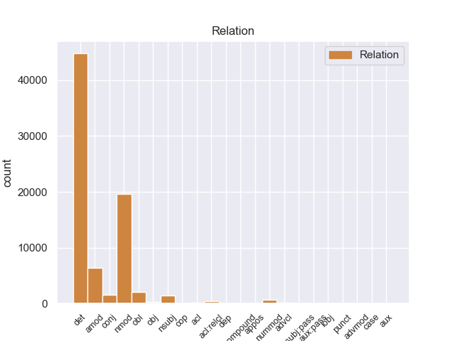
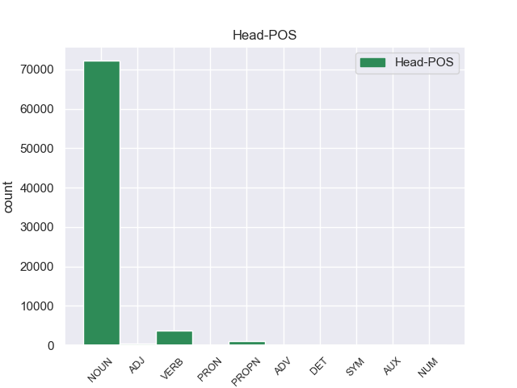
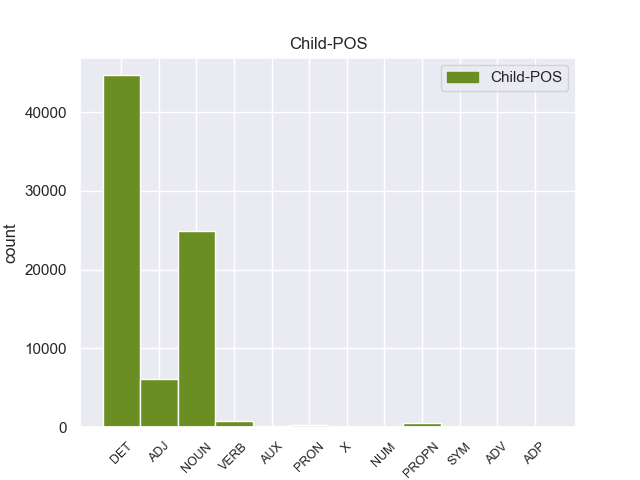

Distribution of features within this leaf



Agreement Rules sorted by frequency.
- When the dependent token is the determiner(det) of the head token, and the dependent token is DET.
1 En _ _ _ _ 0 _ _ _
2 1991 _ _ _ _ 0 _ _ _
3 , _ _ _ _ 0 _ _ _
4 como _ _ _ _ 0 _ _ _
5 ya _ _ _ _ 0 _ _ _
6 está _ _ _ _ 0 _ _ _
7 indicado _ _ _ _ 0 _ _ _
8 en _ _ _ _ 0 _ _ _
9 el _ _ _ _ 0 _ _ _
10 párrafo _ _ _ _ 0 _ _ _
11 anterior _ _ _ _ 0 _ _ _
12 , _ _ _ _ 0 _ _ _
13 se _ _ _ _ 0 _ _ _
14 creó _ _ _ _ 0 _ _ _
15 un _ _ _ _ 0 _ _ _
16 equipo _ _ _ _ 0 _ _ _
17 ad _ _ _ _ 0 _ _ _
18 hoc _ _ _ _ 0 _ _ _
19 para _ _ _ _ 0 _ _ _
20 averiguar _ _ _ _ 0 _ _ _
21 como _ _ _ _ 0 _ _ _
22 se _ _ _ _ 0 _ _ _
23 podía _ _ _ _ 0 _ _ _
24 desarrollar _ _ _ _ 0 _ _ _
25 el _ _ _ _ 0 _ _ _
26 Dialogo _ _ _ _ 0 _ _ _
27 Social _ _ _ _ 0 _ _ _
28 , _ _ _ _ 0 _ _ _
29 este _ _ _ _ 0 _ _ _
30 equipo _ _ _ _ 0 _ _ _
31 estaba _ _ _ _ 0 _ _ _
32 formado _ _ _ _ 0 _ _ _
33 por _ _ _ _ 0 _ _ _
34 representantes _ _ _ _ 0 _ _ _
35 de _ _ _ _ 0 _ _ _
36 todas _ _ _ _ 0 _ _ _
37 las el DET _ Definite=Def|Gender=Fem|Number=Plur|PronType=Art 38 det _ _
38 organizaciones organizacione NOUN _ Gender=Fem|Number=Plur 0 _ _ _
39 relacionadas _ _ _ _ 0 _ _ _
40 con _ _ _ _ 0 _ _ _
41 CES _ _ _ _ 0 _ _ _
42 , _ _ _ _ 0 _ _ _
43 UNICE _ _ _ _ 0 _ _ _
44 y _ _ _ _ 0 _ _ _
45 CEEP _ _ _ _ 0 _ _ _
46 ; _ _ _ _ 0 _ _ _
1 En _ _ _ _ 0 _ _ _
2 1991 _ _ _ _ 0 _ _ _
3 , _ _ _ _ 0 _ _ _
4 como _ _ _ _ 0 _ _ _
5 ya _ _ _ _ 0 _ _ _
6 está _ _ _ _ 0 _ _ _
7 indicado _ _ _ _ 0 _ _ _
8 en _ _ _ _ 0 _ _ _
9 el _ _ _ _ 0 _ _ _
10 párrafo _ _ _ _ 0 _ _ _
11 anterior _ _ _ _ 0 _ _ _
12 , _ _ _ _ 0 _ _ _
13 se _ _ _ _ 0 _ _ _
14 creó _ _ _ _ 0 _ _ _
15 un _ _ _ _ 0 _ _ _
16 equipo equipo NOUN _ Gender=Masc|Number=Sing 0 _ _ _
17 ad _ _ _ _ 0 _ _ _
18 hoc _ _ _ _ 0 _ _ _
19 para _ _ _ _ 0 _ _ _
20 averiguar _ _ _ _ 0 _ _ _
21 como _ _ _ _ 0 _ _ _
22 se _ _ _ _ 0 _ _ _
23 podía _ _ _ _ 0 _ _ _
24 desarrollar _ _ _ _ 0 _ _ _
25 el _ _ _ _ 0 _ _ _
26 Dialogo dialogo NOUN _ Gender=Masc|Number=Sing 16 nmod _ _
27 Social _ _ _ _ 0 _ _ _
28 , _ _ _ _ 0 _ _ _
29 este _ _ _ _ 0 _ _ _
30 equipo _ _ _ _ 0 _ _ _
31 estaba _ _ _ _ 0 _ _ _
32 formado _ _ _ _ 0 _ _ _
33 por _ _ _ _ 0 _ _ _
34 representantes _ _ _ _ 0 _ _ _
35 de _ _ _ _ 0 _ _ _
36 todas _ _ _ _ 0 _ _ _
37 las _ _ _ _ 0 _ _ _
38 organizaciones _ _ _ _ 0 _ _ _
39 relacionadas _ _ _ _ 0 _ _ _
40 con _ _ _ _ 0 _ _ _
41 CES _ _ _ _ 0 _ _ _
42 , _ _ _ _ 0 _ _ _
43 UNICE _ _ _ _ 0 _ _ _
44 y _ _ _ _ 0 _ _ _
45 CEEP _ _ _ _ 0 _ _ _
46 ; _ _ _ _ 0 _ _ _
1 En _ _ _ _ 0 _ _ _
2 1991 _ _ _ _ 0 _ _ _
3 , _ _ _ _ 0 _ _ _
4 como _ _ _ _ 0 _ _ _
5 ya _ _ _ _ 0 _ _ _
6 está _ _ _ _ 0 _ _ _
7 indicado _ _ _ _ 0 _ _ _
8 en _ _ _ _ 0 _ _ _
9 el _ _ _ _ 0 _ _ _
10 párrafo _ _ _ _ 0 _ _ _
11 anterior _ _ _ _ 0 _ _ _
12 , _ _ _ _ 0 _ _ _
13 se _ _ _ _ 0 _ _ _
14 creó _ _ _ _ 0 _ _ _
15 un _ _ _ _ 0 _ _ _
16 equipo equipo NOUN _ Gender=Masc|Number=Sing 0 _ _ _
17 ad _ _ _ _ 0 _ _ _
18 hoc hoc ADJ _ Gender=Masc|Number=Sing 16 amod _ _
19 para _ _ _ _ 0 _ _ _
20 averiguar _ _ _ _ 0 _ _ _
21 como _ _ _ _ 0 _ _ _
22 se _ _ _ _ 0 _ _ _
23 podía _ _ _ _ 0 _ _ _
24 desarrollar _ _ _ _ 0 _ _ _
25 el _ _ _ _ 0 _ _ _
26 Dialogo _ _ _ _ 0 _ _ _
27 Social _ _ _ _ 0 _ _ _
28 , _ _ _ _ 0 _ _ _
29 este _ _ _ _ 0 _ _ _
30 equipo _ _ _ _ 0 _ _ _
31 estaba _ _ _ _ 0 _ _ _
32 formado _ _ _ _ 0 _ _ _
33 por _ _ _ _ 0 _ _ _
34 representantes _ _ _ _ 0 _ _ _
35 de _ _ _ _ 0 _ _ _
36 todas _ _ _ _ 0 _ _ _
37 las _ _ _ _ 0 _ _ _
38 organizaciones _ _ _ _ 0 _ _ _
39 relacionadas _ _ _ _ 0 _ _ _
40 con _ _ _ _ 0 _ _ _
41 CES _ _ _ _ 0 _ _ _
42 , _ _ _ _ 0 _ _ _
43 UNICE _ _ _ _ 0 _ _ _
44 y _ _ _ _ 0 _ _ _
45 CEEP _ _ _ _ 0 _ _ _
46 ; _ _ _ _ 0 _ _ _
1 En _ _ _ _ 0 _ _ _
2 1991 _ _ _ _ 0 _ _ _
3 , _ _ _ _ 0 _ _ _
4 como _ _ _ _ 0 _ _ _
5 ya _ _ _ _ 0 _ _ _
6 está _ _ _ _ 0 _ _ _
7 indicado _ _ _ _ 0 _ _ _
8 en _ _ _ _ 0 _ _ _
9 el _ _ _ _ 0 _ _ _
10 párrafo _ _ _ _ 0 _ _ _
11 anterior _ _ _ _ 0 _ _ _
12 , _ _ _ _ 0 _ _ _
13 se _ _ _ _ 0 _ _ _
14 creó _ _ _ _ 0 _ _ _
15 un _ _ _ _ 0 _ _ _
16 equipo _ _ _ _ 0 _ _ _
17 ad _ _ _ _ 0 _ _ _
18 hoc _ _ _ _ 0 _ _ _
19 para _ _ _ _ 0 _ _ _
20 averiguar _ _ _ _ 0 _ _ _
21 como _ _ _ _ 0 _ _ _
22 se _ _ _ _ 0 _ _ _
23 podía _ _ _ _ 0 _ _ _
24 desarrollar _ _ _ _ 0 _ _ _
25 el _ _ _ _ 0 _ _ _
26 Dialogo _ _ _ _ 0 _ _ _
27 Social _ _ _ _ 0 _ _ _
28 , _ _ _ _ 0 _ _ _
29 este _ _ _ _ 0 _ _ _
30 equipo _ _ _ _ 0 _ _ _
31 estaba _ _ _ _ 0 _ _ _
32 formado formado VERB _ Gender=Masc|Number=Sing|VerbForm=Part 0 _ _ _
33 por _ _ _ _ 0 _ _ _
34 representantes representante NOUN _ Gender=Masc|Number=Plur 32 obl _ _
35 de _ _ _ _ 0 _ _ _
36 todas _ _ _ _ 0 _ _ _
37 las _ _ _ _ 0 _ _ _
38 organizaciones _ _ _ _ 0 _ _ _
39 relacionadas _ _ _ _ 0 _ _ _
40 con _ _ _ _ 0 _ _ _
41 CES _ _ _ _ 0 _ _ _
42 , _ _ _ _ 0 _ _ _
43 UNICE _ _ _ _ 0 _ _ _
44 y _ _ _ _ 0 _ _ _
45 CEEP _ _ _ _ 0 _ _ _
46 ; _ _ _ _ 0 _ _ _
1 En _ _ _ _ 0 _ _ _
2 1991 _ _ _ _ 0 _ _ _
3 , _ _ _ _ 0 _ _ _
4 como _ _ _ _ 0 _ _ _
5 ya _ _ _ _ 0 _ _ _
6 está _ _ _ _ 0 _ _ _
7 indicado _ _ _ _ 0 _ _ _
8 en _ _ _ _ 0 _ _ _
9 el _ _ _ _ 0 _ _ _
10 párrafo _ _ _ _ 0 _ _ _
11 anterior _ _ _ _ 0 _ _ _
12 , _ _ _ _ 0 _ _ _
13 se _ _ _ _ 0 _ _ _
14 creó _ _ _ _ 0 _ _ _
15 un _ _ _ _ 0 _ _ _
16 equipo _ _ _ _ 0 _ _ _
17 ad _ _ _ _ 0 _ _ _
18 hoc _ _ _ _ 0 _ _ _
19 para _ _ _ _ 0 _ _ _
20 averiguar _ _ _ _ 0 _ _ _
21 como _ _ _ _ 0 _ _ _
22 se _ _ _ _ 0 _ _ _
23 podía _ _ _ _ 0 _ _ _
24 desarrollar _ _ _ _ 0 _ _ _
25 el _ _ _ _ 0 _ _ _
26 Dialogo _ _ _ _ 0 _ _ _
27 Social _ _ _ _ 0 _ _ _
28 , _ _ _ _ 0 _ _ _
29 este _ _ _ _ 0 _ _ _
30 equipo equipo NOUN _ Gender=Masc|Number=Sing 32 nsubj _ _
31 estaba _ _ _ _ 0 _ _ _
32 formado formado VERB _ Gender=Masc|Number=Sing|VerbForm=Part 0 _ _ _
33 por _ _ _ _ 0 _ _ _
34 representantes _ _ _ _ 0 _ _ _
35 de _ _ _ _ 0 _ _ _
36 todas _ _ _ _ 0 _ _ _
37 las _ _ _ _ 0 _ _ _
38 organizaciones _ _ _ _ 0 _ _ _
39 relacionadas _ _ _ _ 0 _ _ _
40 con _ _ _ _ 0 _ _ _
41 CES _ _ _ _ 0 _ _ _
42 , _ _ _ _ 0 _ _ _
43 UNICE _ _ _ _ 0 _ _ _
44 y _ _ _ _ 0 _ _ _
45 CEEP _ _ _ _ 0 _ _ _
46 ; _ _ _ _ 0 _ _ _
1 Esta _ _ _ _ 0 _ _ _
2 teoría _ _ _ _ 0 _ _ _
3 se _ _ _ _ 0 _ _ _
4 avenía _ _ _ _ 0 _ _ _
5 bien _ _ _ _ 0 _ _ _
6 con _ _ _ _ 0 _ _ _
7 la _ _ _ _ 0 _ _ _
8 creencia _ _ _ _ 0 _ _ _
9 de _ _ _ _ 0 _ _ _
10 el _ _ _ _ 0 _ _ _
11 Romanticismo _ _ _ _ 0 _ _ _
12 en _ _ _ _ 0 _ _ _
13 un _ _ _ _ 0 _ _ _
14 volkgeist _ _ _ _ 0 _ _ _
15 , _ _ _ _ 0 _ _ _
16 " _ _ _ _ 0 _ _ _
17 genio genio NOUN _ Gender=Masc|Number=Sing 0 _ _ _
18 o _ _ _ _ 0 _ _ _
19 espíritu espíritu NOUN _ Gender=Masc|Number=Sing 17 conj _ _
20 de _ _ _ _ 0 _ _ _
21 el _ _ _ _ 0 _ _ _
22 pueblo _ _ _ _ 0 _ _ _
23 " _ _ _ _ 0 _ _ _
24 , _ _ _ _ 0 _ _ _
25 autor _ _ _ _ 0 _ _ _
26 colectivo _ _ _ _ 0 _ _ _
27 y _ _ _ _ 0 _ _ _
28 anónimo _ _ _ _ 0 _ _ _
29 de _ _ _ _ 0 _ _ _
30 una _ _ _ _ 0 _ _ _
31 poesía _ _ _ _ 0 _ _ _
32 nacional _ _ _ _ 0 _ _ _
33 . _ _ _ _ 0 _ _ _
1 Joramun _ _ _ _ 0 _ _ _
2 se _ _ _ _ 0 _ _ _
3 supone _ _ _ _ 0 _ _ _
4 que _ _ _ _ 0 _ _ _
5 era _ _ _ _ 0 _ _ _
6 un _ _ _ _ 0 _ _ _
7 legendario legendario NOUN _ Gender=Masc|Number=Sing 8 amod _ _
8 Rey rey NOUN _ Gender=Masc|Number=Sing 0 _ _ _
9 - _ _ _ _ 0 _ _ _
10 Más _ _ _ _ 0 _ _ _
11 - _ _ _ _ 0 _ _ _
12 Allá _ _ _ _ 0 _ _ _
13 - _ _ _ _ 0 _ _ _
14 de _ _ _ _ 0 _ _ _
15 el _ _ _ _ 0 _ _ _
16 - _ _ _ _ 0 _ _ _
17 Muro _ _ _ _ 0 _ _ _
18 , _ _ _ _ 0 _ _ _
19 a _ _ _ _ 0 _ _ _
20 el _ _ _ _ 0 _ _ _
21 norte _ _ _ _ 0 _ _ _
22 de _ _ _ _ 0 _ _ _
23 los _ _ _ _ 0 _ _ _
24 Siete _ _ _ _ 0 _ _ _
25 Reinos _ _ _ _ 0 _ _ _
26 . _ _ _ _ 0 _ _ _
1 Ahora _ _ _ _ 0 _ _ _
2 se _ _ _ _ 0 _ _ _
3 aunan _ _ _ _ 0 _ _ _
4 cocina _ _ _ _ 0 _ _ _
5 y _ _ _ _ 0 _ _ _
6 entorno _ _ _ _ 0 _ _ _
7 , _ _ _ _ 0 _ _ _
8 me _ _ _ _ 0 _ _ _
9 encanto _ _ _ _ 0 _ _ _
10 la _ _ _ _ 0 _ _ _
11 bodega _ _ _ _ 0 _ _ _
12 , _ _ _ _ 0 _ _ _
13 las _ _ _ _ 0 _ _ _
14 sillas _ _ _ _ 0 _ _ _
15 son _ _ _ _ 0 _ _ _
16 comodisimas _ _ _ _ 0 _ _ _
17 , _ _ _ _ 0 _ _ _
18 la _ _ _ _ 0 _ _ _
19 iluminacion _ _ _ _ 0 _ _ _
20 es _ _ _ _ 0 _ _ _
21 excepcional _ _ _ _ 0 _ _ _
22 , _ _ _ _ 0 _ _ _
23 alcanzas _ _ _ _ 0 _ _ _
24 un _ _ _ _ 0 _ _ _
25 grado _ _ _ _ 0 _ _ _
26 de _ _ _ _ 0 _ _ _
27 satisfaccion _ _ _ _ 0 _ _ _
28 que _ _ _ _ 0 _ _ _
29 no _ _ _ _ 0 _ _ _
30 se _ _ _ _ 0 _ _ _
31 puede _ _ _ _ 0 _ _ _
32 describir _ _ _ _ 0 _ _ _
33 , _ _ _ _ 0 _ _ _
34 hay _ _ _ _ 0 _ _ _
35 que _ _ _ _ 0 _ _ _
36 probar _ _ _ _ 0 _ _ _
37 lo _ _ _ _ 0 _ _ _
38 , _ _ _ _ 0 _ _ _
39 es _ _ _ _ 0 _ _ _
40 la _ _ _ _ 0 _ _ _
41 primera primero ADJ _ Gender=Fem|Number=Sing 42 nummod _ _
42 vez vez NOUN _ Gender=Fem|Number=Sing 0 _ _ _
43 en _ _ _ _ 0 _ _ _
44 mi _ _ _ _ 0 _ _ _
45 vda _ _ _ _ 0 _ _ _
46 que _ _ _ _ 0 _ _ _
47 una _ _ _ _ 0 _ _ _
48 cocina _ _ _ _ 0 _ _ _
49 me _ _ _ _ 0 _ _ _
50 emociona _ _ _ _ 0 _ _ _
51 hasta _ _ _ _ 0 _ _ _
52 ese _ _ _ _ 0 _ _ _
53 punto _ _ _ _ 0 _ _ _
54 . _ _ _ _ 0 _ _ _
1 El _ _ _ _ 0 _ _ _
2 Football football PROPN _ Gender=Masc|Number=Sing 8 nmod _ _
3 - _ _ _ _ 0 _ _ _
4 Club _ _ _ _ 0 _ _ _
5 Auch _ _ _ _ 0 _ _ _
6 es _ _ _ _ 0 _ _ _
7 un _ _ _ _ 0 _ _ _
8 equipo equipo NOUN _ Gender=Masc|Number=Sing 0 _ _ _
9 profesional _ _ _ _ 0 _ _ _
10 de _ _ _ _ 0 _ _ _
11 rugby _ _ _ _ 0 _ _ _
12 de _ _ _ _ 0 _ _ _
13 Francia _ _ _ _ 0 _ _ _
14 de _ _ _ _ 0 _ _ _
15 la _ _ _ _ 0 _ _ _
16 ciudad _ _ _ _ 0 _ _ _
17 de _ _ _ _ 0 _ _ _
18 Auch _ _ _ _ 0 _ _ _
19 ( _ _ _ _ 0 _ _ _
20 departamento _ _ _ _ 0 _ _ _
21 de _ _ _ _ 0 _ _ _
22 el _ _ _ _ 0 _ _ _
23 Gers _ _ _ _ 0 _ _ _
24 ) _ _ _ _ 0 _ _ _
25 . _ _ _ _ 0 _ _ _
1 En _ _ _ _ 0 _ _ _
2 1991 _ _ _ _ 0 _ _ _
3 , _ _ _ _ 0 _ _ _
4 como _ _ _ _ 0 _ _ _
5 ya _ _ _ _ 0 _ _ _
6 está _ _ _ _ 0 _ _ _
7 indicado _ _ _ _ 0 _ _ _
8 en _ _ _ _ 0 _ _ _
9 el _ _ _ _ 0 _ _ _
10 párrafo _ _ _ _ 0 _ _ _
11 anterior _ _ _ _ 0 _ _ _
12 , _ _ _ _ 0 _ _ _
13 se _ _ _ _ 0 _ _ _
14 creó _ _ _ _ 0 _ _ _
15 un _ _ _ _ 0 _ _ _
16 equipo equipo NOUN _ Gender=Masc|Number=Sing 0 _ _ _
17 ad _ _ _ _ 0 _ _ _
18 hoc _ _ _ _ 0 _ _ _
19 para _ _ _ _ 0 _ _ _
20 averiguar _ _ _ _ 0 _ _ _
21 como _ _ _ _ 0 _ _ _
22 se _ _ _ _ 0 _ _ _
23 podía _ _ _ _ 0 _ _ _
24 desarrollar _ _ _ _ 0 _ _ _
25 el _ _ _ _ 0 _ _ _
26 Dialogo _ _ _ _ 0 _ _ _
27 Social _ _ _ _ 0 _ _ _
28 , _ _ _ _ 0 _ _ _
29 este _ _ _ _ 0 _ _ _
30 equipo _ _ _ _ 0 _ _ _
31 estaba _ _ _ _ 0 _ _ _
32 formado formado VERB _ Gender=Masc|Number=Sing|VerbForm=Part 16 acl:relcl _ _
33 por _ _ _ _ 0 _ _ _
34 representantes _ _ _ _ 0 _ _ _
35 de _ _ _ _ 0 _ _ _
36 todas _ _ _ _ 0 _ _ _
37 las _ _ _ _ 0 _ _ _
38 organizaciones _ _ _ _ 0 _ _ _
39 relacionadas _ _ _ _ 0 _ _ _
40 con _ _ _ _ 0 _ _ _
41 CES _ _ _ _ 0 _ _ _
42 , _ _ _ _ 0 _ _ _
43 UNICE _ _ _ _ 0 _ _ _
44 y _ _ _ _ 0 _ _ _
45 CEEP _ _ _ _ 0 _ _ _
46 ; _ _ _ _ 0 _ _ _
1 " _ _ _ _ 0 _ _ _
2 Tenemos _ _ _ _ 0 _ _ _
3 todo _ _ _ _ 0 _ _ _
4 listo _ _ _ _ 0 _ _ _
5 , _ _ _ _ 0 _ _ _
6 la _ _ _ _ 0 _ _ _
7 venta _ _ _ _ 0 _ _ _
8 de _ _ _ _ 0 _ _ _
9 boletos _ _ _ _ 0 _ _ _
10 será _ _ _ _ 0 _ _ _
11 a _ _ _ _ 0 _ _ _
12 partir _ _ _ _ 0 _ _ _
13 de _ _ _ _ 0 _ _ _
14 mañana _ _ _ _ 0 _ _ _
15 de _ _ _ _ 0 _ _ _
16 8 _ _ _ _ 0 _ _ _
17 am _ _ _ _ 0 _ _ _
18 a _ _ _ _ 0 _ _ _
19 3 _ _ _ _ 0 _ _ _
20 pm _ _ _ _ 0 _ _ _
21 , _ _ _ _ 0 _ _ _
22 la _ _ _ _ 0 _ _ _
23 afición _ _ _ _ 0 _ _ _
24 de _ _ _ _ 0 _ _ _
25 el _ _ _ _ 0 _ _ _
26 Real _ _ _ _ 0 _ _ _
27 España _ _ _ _ 0 _ _ _
28 podrá _ _ _ _ 0 _ _ _
29 comprar _ _ _ _ 0 _ _ _
30 en _ _ _ _ 0 _ _ _
31 el _ _ _ _ 0 _ _ _
32 Banco _ _ _ _ 0 _ _ _
33 Continental _ _ _ _ 0 _ _ _
34 , _ _ _ _ 0 _ _ _
35 frente _ _ _ _ 0 _ _ _
36 a _ _ _ _ 0 _ _ _
37 el _ _ _ _ 0 _ _ _
38 estadio _ _ _ _ 0 _ _ _
39 Morazán _ _ _ _ 0 _ _ _
40 , _ _ _ _ 0 _ _ _
41 se _ _ _ _ 0 _ _ _
42 han _ _ _ _ 0 _ _ _
43 puesto puesto VERB _ Gender=Masc|Number=Sing|Tense=Past|VerbForm=Part 0 _ _ _
44 a _ _ _ _ 0 _ _ _
45 la _ _ _ _ 0 _ _ _
46 venta _ _ _ _ 0 _ _ _
47 800 _ _ _ _ 0 _ _ _
48 boletos boletos NOUN _ Gender=Masc|Number=Sing 43 obj _ _
49 , _ _ _ _ 0 _ _ _
50 500 _ _ _ _ 0 _ _ _
51 en _ _ _ _ 0 _ _ _
52 sol _ _ _ _ 0 _ _ _
53 y _ _ _ _ 0 _ _ _
54 300 _ _ _ _ 0 _ _ _
55 en _ _ _ _ 0 _ _ _
56 preferencia _ _ _ _ 0 _ _ _
57 , _ _ _ _ 0 _ _ _
58 la _ _ _ _ 0 _ _ _
59 boletería _ _ _ _ 0 _ _ _
60 de _ _ _ _ 0 _ _ _
61 el _ _ _ _ 0 _ _ _
62 España _ _ _ _ 0 _ _ _
63 está _ _ _ _ 0 _ _ _
64 ya _ _ _ _ 0 _ _ _
65 identificada _ _ _ _ 0 _ _ _
66 con _ _ _ _ 0 _ _ _
67 el _ _ _ _ 0 _ _ _
68 escudo _ _ _ _ 0 _ _ _
69 de _ _ _ _ 0 _ _ _
70 el _ _ _ _ 0 _ _ _
71 equipo _ _ _ _ 0 _ _ _
72 y _ _ _ _ 0 _ _ _
73 con _ _ _ _ 0 _ _ _
74 el _ _ _ _ 0 _ _ _
75 color _ _ _ _ 0 _ _ _
76 amarillo _ _ _ _ 0 _ _ _
77 " _ _ _ _ 0 _ _ _
78 , _ _ _ _ 0 _ _ _
79 comentó _ _ _ _ 0 _ _ _
80 Rolin _ _ _ _ 0 _ _ _
81 . _ _ _ _ 0 _ _ _
1 Jazmin _ _ _ _ 0 _ _ _
2 es _ _ _ _ 0 _ _ _
3 todo _ _ _ _ 0 _ _ _
4 lo lo PRON _ Case=Acc|Gender=Masc|Number=Sing|Person=3|PrepCase=Npr|PronType=Prs 5 det _ _
5 contrario contrario ADJ _ Gender=Masc|Number=Sing 0 _ _ _
6 , _ _ _ _ 0 _ _ _
7 es _ _ _ _ 0 _ _ _
8 tímida _ _ _ _ 0 _ _ _
9 y _ _ _ _ 0 _ _ _
10 callada _ _ _ _ 0 _ _ _
11 , _ _ _ _ 0 _ _ _
12 pero _ _ _ _ 0 _ _ _
13 siempre _ _ _ _ 0 _ _ _
14 es _ _ _ _ 0 _ _ _
15 arrastrada _ _ _ _ 0 _ _ _
16 por _ _ _ _ 0 _ _ _
17 las _ _ _ _ 0 _ _ _
18 locuras _ _ _ _ 0 _ _ _
19 y _ _ _ _ 0 _ _ _
20 travesuras _ _ _ _ 0 _ _ _
21 que _ _ _ _ 0 _ _ _
22 inventa _ _ _ _ 0 _ _ _
23 Alma _ _ _ _ 0 _ _ _
24 . _ _ _ _ 0 _ _ _
1 La _ _ _ _ 0 _ _ _
2 primera primera NOUN _ Gender=Fem|Number=Sing 3 nummod _ _
3 vez vez NOUN _ Gender=Fem|Number=Sing 0 _ _ _
4 , _ _ _ _ 0 _ _ _
5 tenía _ _ _ _ 0 _ _ _
6 un _ _ _ _ 0 _ _ _
7 presupuesto _ _ _ _ 0 _ _ _
8 de _ _ _ _ 0 _ _ _
9 700 _ _ _ _ 0 _ _ _
10 € _ _ _ _ 0 _ _ _
11 en _ _ _ _ 0 _ _ _
12 el _ _ _ _ 0 _ _ _
13 servicio _ _ _ _ 0 _ _ _
14 oficial _ _ _ _ 0 _ _ _
15 ( _ _ _ _ 0 _ _ _
16 te _ _ _ _ 0 _ _ _
17 lo _ _ _ _ 0 _ _ _
18 cambio _ _ _ _ 0 _ _ _
19 todo _ _ _ _ 0 _ _ _
20 y _ _ _ _ 0 _ _ _
21 soluciono _ _ _ _ 0 _ _ _
22 el _ _ _ _ 0 _ _ _
23 problema _ _ _ _ 0 _ _ _
24 ) _ _ _ _ 0 _ _ _
25 , _ _ _ _ 0 _ _ _
26 y _ _ _ _ 0 _ _ _
27 en _ _ _ _ 0 _ _ _
28 Pinauto _ _ _ _ 0 _ _ _
29 me _ _ _ _ 0 _ _ _
30 lo _ _ _ _ 0 _ _ _
31 solucionaron _ _ _ _ 0 _ _ _
32 por _ _ _ _ 0 _ _ _
33 unos _ _ _ _ 0 _ _ _
34 200 _ _ _ _ 0 _ _ _
35 € _ _ _ _ 0 _ _ _
36 , _ _ _ _ 0 _ _ _
37 cambiando _ _ _ _ 0 _ _ _
38 sólo _ _ _ _ 0 _ _ _
39 lo _ _ _ _ 0 _ _ _
40 necesario _ _ _ _ 0 _ _ _
41 . _ _ _ _ 0 _ _ _
1 Los _ _ _ _ 0 _ _ _
2 gobernantes _ _ _ _ 0 _ _ _
3 de _ _ _ _ 0 _ _ _
4 la _ _ _ _ 0 _ _ _
5 ciudad _ _ _ _ 0 _ _ _
6 vivían _ _ _ _ 0 _ _ _
7 en _ _ _ _ 0 _ _ _
8 la _ _ _ _ 0 _ _ _
9 acrópolis _ _ _ _ 0 _ _ _
10 , _ _ _ _ 0 _ _ _
11 que _ _ _ _ 0 _ _ _
12 incluía _ _ _ _ 0 _ _ _
13 baños _ _ _ _ 0 _ _ _
14 pavimentados _ _ _ _ 0 _ _ _
15 , _ _ _ _ 0 _ _ _
16 alcantarillado _ _ _ _ 0 _ _ _
17 subterráneo _ _ _ _ 0 _ _ _
18 y _ _ _ _ 0 _ _ _
19 de _ _ _ _ 0 _ _ _
20 superficie _ _ _ _ 0 _ _ _
21 ( _ _ _ _ 0 _ _ _
22 construido construido VERB _ Gender=Masc|Number=Sing|VerbForm=Part 32 acl _ _
23 con _ _ _ _ 0 _ _ _
24 ladrillos _ _ _ _ 0 _ _ _
25 endurecidos _ _ _ _ 0 _ _ _
26 a _ _ _ _ 0 _ _ _
27 el _ _ _ _ 0 _ _ _
28 horno _ _ _ _ 0 _ _ _
29 ) _ _ _ _ 0 _ _ _
30 y _ _ _ _ 0 _ _ _
31 un _ _ _ _ 0 _ _ _
32 pozo pozo NOUN _ Gender=Masc|Number=Sing 0 _ _ _
33 de _ _ _ _ 0 _ _ _
34 agua _ _ _ _ 0 _ _ _
35 potable _ _ _ _ 0 _ _ _
36 . _ _ _ _ 0 _ _ _
1 Se _ _ _ _ 0 _ _ _
2 eligen _ _ _ _ 0 _ _ _
3 en _ _ _ _ 0 _ _ _
4 una _ _ _ _ 0 _ _ _
5 misma _ _ _ _ 0 _ _ _
6 candidatura candidatura NOUN _ Gender=Fem|Number=Sing 0 _ _ _
7 presentada presentada VERB _ Gender=Fem|Number=Sing|VerbForm=Part 6 amod _ _
8 por _ _ _ _ 0 _ _ _
9 el _ _ _ _ 0 _ _ _
10 respectivo _ _ _ _ 0 _ _ _
11 partido _ _ _ _ 0 _ _ _
12 . _ _ _ _ 0 _ _ _
1 Camelot _ _ _ _ 0 _ _ _
2 había _ _ _ _ 0 _ _ _
3 estado ester VERB _ Gender=Masc|Number=Sing|Tense=Past|VerbForm=Part 4 advcl _ _
4 trabajando trabajando VERB _ Gender=Masc|Number=Sing|Tense=Past|VerbForm=Part 0 _ _ _
5 en _ _ _ _ 0 _ _ _
6 una _ _ _ _ 0 _ _ _
7 versión _ _ _ _ 0 _ _ _
8 previa _ _ _ _ 0 _ _ _
9 de _ _ _ _ 0 _ _ _
10 Mario _ _ _ _ 0 _ _ _
11 Tennis _ _ _ _ 0 _ _ _
12 para _ _ _ _ 0 _ _ _
13 la _ _ _ _ 0 _ _ _
14 consola _ _ _ _ 0 _ _ _
15 Nintendo _ _ _ _ 0 _ _ _
16 GameCube _ _ _ _ 0 _ _ _
17 , _ _ _ _ 0 _ _ _
18 sin _ _ _ _ 0 _ _ _
19 embargo _ _ _ _ 0 _ _ _
20 pausó _ _ _ _ 0 _ _ _
21 el _ _ _ _ 0 _ _ _
22 proyecto _ _ _ _ 0 _ _ _
23 para _ _ _ _ 0 _ _ _
24 reiniciar _ _ _ _ 0 _ _ _
25 lo _ _ _ _ 0 _ _ _
26 desde _ _ _ _ 0 _ _ _
27 cero _ _ _ _ 0 _ _ _
28 , _ _ _ _ 0 _ _ _
29 esta _ _ _ _ 0 _ _ _
30 vez _ _ _ _ 0 _ _ _
31 usando _ _ _ _ 0 _ _ _
32 ideas _ _ _ _ 0 _ _ _
33 y _ _ _ _ 0 _ _ _
34 tecnología _ _ _ _ 0 _ _ _
35 provenientes _ _ _ _ 0 _ _ _
36 de _ _ _ _ 0 _ _ _
37 Mario _ _ _ _ 0 _ _ _
38 Golf _ _ _ _ 0 _ _ _
39 : _ _ _ _ 0 _ _ _
40 Toadstool _ _ _ _ 0 _ _ _
41 Tour _ _ _ _ 0 _ _ _
42 , _ _ _ _ 0 _ _ _
43 el _ _ _ _ 0 _ _ _
44 cual _ _ _ _ 0 _ _ _
45 se _ _ _ _ 0 _ _ _
46 desarrolló _ _ _ _ 0 _ _ _
47 de _ _ _ _ 0 _ _ _
48 manera _ _ _ _ 0 _ _ _
49 simultánea _ _ _ _ 0 _ _ _
50 a _ _ _ _ 0 _ _ _
51 Power _ _ _ _ 0 _ _ _
52 Tennis _ _ _ _ 0 _ _ _
53 . _ _ _ _ 0 _ _ _
1 Ese _ _ _ _ 0 _ _ _
2 mismo mismo DET _ Gender=Masc|Number=Sing 3 amod _ _
3 año año NOUN _ Gender=Masc|Number=Sing 0 _ _ _
4 participó _ _ _ _ 0 _ _ _
5 con _ _ _ _ 0 _ _ _
6 el _ _ _ _ 0 _ _ _
7 equipo _ _ _ _ 0 _ _ _
8 ruso _ _ _ _ 0 _ _ _
9 en _ _ _ _ 0 _ _ _
10 la _ _ _ _ 0 _ _ _
11 Olimpiada _ _ _ _ 0 _ _ _
12 de _ _ _ _ 0 _ _ _
13 Ajedrez _ _ _ _ 0 _ _ _
14 de _ _ _ _ 0 _ _ _
15 Estambul _ _ _ _ 0 _ _ _
16 y _ _ _ _ 0 _ _ _
17 obtuvo _ _ _ _ 0 _ _ _
18 la _ _ _ _ 0 _ _ _
19 medalla _ _ _ _ 0 _ _ _
20 de _ _ _ _ 0 _ _ _
21 bronce _ _ _ _ 0 _ _ _
22 en _ _ _ _ 0 _ _ _
23 tanto _ _ _ _ 0 _ _ _
24 que _ _ _ _ 0 _ _ _
25 mejor _ _ _ _ 0 _ _ _
26 segunda _ _ _ _ 0 _ _ _
27 jugador _ _ _ _ 0 _ _ _
28 reservista _ _ _ _ 0 _ _ _
29 de _ _ _ _ 0 _ _ _
30 el _ _ _ _ 0 _ _ _
31 torneo _ _ _ _ 0 _ _ _
32 ( _ _ _ _ 0 _ _ _
33 los _ _ _ _ 0 _ _ _
34 equipos _ _ _ _ 0 _ _ _
35 estaban _ _ _ _ 0 _ _ _
36 formados _ _ _ _ 0 _ _ _
37 por _ _ _ _ 0 _ _ _
38 cuatro _ _ _ _ 0 _ _ _
39 jugadores _ _ _ _ 0 _ _ _
40 titulares _ _ _ _ 0 _ _ _
41 y _ _ _ _ 0 _ _ _
42 dos _ _ _ _ 0 _ _ _
43 reservas _ _ _ _ 0 _ _ _
44 ) _ _ _ _ 0 _ _ _
45 . _ _ _ _ 0 _ _ _
1 Fue _ _ _ _ 0 _ _ _
2 escrita escrita VERB _ Gender=Fem|Number=Sing 0 _ _ _
3 y _ _ _ _ 0 _ _ _
4 dirigida dirigida VERB _ Gender=Fem|Number=Sing|Tense=Past|VerbForm=Part 2 conj _ _
5 por _ _ _ _ 0 _ _ _
6 Hugo _ _ _ _ 0 _ _ _
7 Moser _ _ _ _ 0 _ _ _
8 , _ _ _ _ 0 _ _ _
9 para _ _ _ _ 0 _ _ _
10 quien _ _ _ _ 0 _ _ _
11 fue _ _ _ _ 0 _ _ _
12 su _ _ _ _ 0 _ _ _
13 primer _ _ _ _ 0 _ _ _
14 gran _ _ _ _ 0 _ _ _
15 éxito _ _ _ _ 0 _ _ _
16 . _ _ _ _ 0 _ _ _
1 Con _ _ _ _ 0 _ _ _
2 miras _ _ _ _ 0 _ _ _
3 a _ _ _ _ 0 _ _ _
4 minimizar _ _ _ _ 0 _ _ _
5 cualquier _ _ _ _ 0 _ _ _
6 confusión _ _ _ _ 0 _ _ _
7 con _ _ _ _ 0 _ _ _
8 una _ _ _ _ 0 _ _ _
9 religión _ _ _ _ 0 _ _ _
10 , _ _ _ _ 0 _ _ _
11 el _ _ _ _ 0 _ _ _
12 uso _ _ _ _ 0 _ _ _
13 de _ _ _ _ 0 _ _ _
14 la _ _ _ _ 0 _ _ _
15 palabra _ _ _ _ 0 _ _ _
16 " _ _ _ _ 0 _ _ _
17 templo _ _ _ _ 0 _ _ _
18 " _ _ _ _ 0 _ _ _
19 para _ _ _ _ 0 _ _ _
20 describir _ _ _ _ 0 _ _ _
21 los _ _ _ _ 0 _ _ _
22 inmuebles _ _ _ _ 0 _ _ _
23 de _ _ _ _ 0 _ _ _
24 los _ _ _ _ 0 _ _ _
25 Shriners _ _ _ _ 0 _ _ _
26 ha _ _ _ _ 0 _ _ _
27 sido _ _ _ _ 0 _ _ _
28 reemplazado _ _ _ _ 0 _ _ _
29 por _ _ _ _ 0 _ _ _
30 la _ _ _ _ 0 _ _ _
31 frase _ _ _ _ 0 _ _ _
32 " _ _ _ _ 0 _ _ _
33 Centro _ _ _ _ 0 _ _ _
34 Shriner _ _ _ _ 0 _ _ _
35 " _ _ _ _ 0 _ _ _
36 , _ _ _ _ 0 _ _ _
37 aunque _ _ _ _ 0 _ _ _
38 en _ _ _ _ 0 _ _ _
39 capítulos _ _ _ _ 0 _ _ _
40 individuales _ _ _ _ 0 _ _ _
41 siguen _ _ _ _ 0 _ _ _
42 siendo sieer AUX _ Gender=Masc|Number=Sing|Tense=Past|VerbForm=Part 43 aux:pass _ _
43 nombrados nombrado VERB _ Gender=Masc|Number=Sing|Tense=Past|VerbForm=Part 0 _ _ _
44 como _ _ _ _ 0 _ _ _
45 " _ _ _ _ 0 _ _ _
46 templos _ _ _ _ 0 _ _ _
47 " _ _ _ _ 0 _ _ _
48 . _ _ _ _ 0 _ _ _
1 Jazmin _ _ _ _ 0 _ _ _
2 es _ _ _ _ 0 _ _ _
3 todo _ _ _ _ 0 _ _ _
4 lo _ _ _ _ 0 _ _ _
5 contrario _ _ _ _ 0 _ _ _
6 , _ _ _ _ 0 _ _ _
7 es _ _ _ _ 0 _ _ _
8 tímida tímida ADJ _ Gender=Fem|Number=Sing 0 _ _ _
9 y _ _ _ _ 0 _ _ _
10 callada callada ADJ _ Gender=Fem|Number=Sing 8 conj _ _
11 , _ _ _ _ 0 _ _ _
12 pero _ _ _ _ 0 _ _ _
13 siempre _ _ _ _ 0 _ _ _
14 es _ _ _ _ 0 _ _ _
15 arrastrada _ _ _ _ 0 _ _ _
16 por _ _ _ _ 0 _ _ _
17 las _ _ _ _ 0 _ _ _
18 locuras _ _ _ _ 0 _ _ _
19 y _ _ _ _ 0 _ _ _
20 travesuras _ _ _ _ 0 _ _ _
21 que _ _ _ _ 0 _ _ _
22 inventa _ _ _ _ 0 _ _ _
23 Alma _ _ _ _ 0 _ _ _
24 . _ _ _ _ 0 _ _ _
1 El _ _ _ _ 0 _ _ _
2 otro otro DET _ Gender=Masc|Number=Sing 3 nummod _ _
3 sistema sistema NOUN _ Gender=Masc|Number=Sing 0 _ _ _
4 , _ _ _ _ 0 _ _ _
5 el _ _ _ _ 0 _ _ _
6 superficial _ _ _ _ 0 _ _ _
7 , _ _ _ _ 0 _ _ _
8 es _ _ _ _ 0 _ _ _
9 el _ _ _ _ 0 _ _ _
10 río _ _ _ _ 0 _ _ _
11 más _ _ _ _ 0 _ _ _
12 largo _ _ _ _ 0 _ _ _
13 de _ _ _ _ 0 _ _ _
14 el _ _ _ _ 0 _ _ _
15 mundo _ _ _ _ 0 _ _ _
16 : _ _ _ _ 0 _ _ _
17 el _ _ _ _ 0 _ _ _
18 Amazonas _ _ _ _ 0 _ _ _
19 . _ _ _ _ 0 _ _ _
1 Hace _ _ _ _ 0 _ _ _
2 aproximadamente _ _ _ _ 0 _ _ _
3 un _ _ _ _ 0 _ _ _
4 año _ _ _ _ 0 _ _ _
5 que _ _ _ _ 0 _ _ _
6 Niscayah _ _ _ _ 0 _ _ _
7 decidió _ _ _ _ 0 _ _ _
8 realizar _ _ _ _ 0 _ _ _
9 un _ _ _ _ 0 _ _ _
10 cambio _ _ _ _ 0 _ _ _
11 estratégico _ _ _ _ 0 _ _ _
12 para _ _ _ _ 0 _ _ _
13 convertir _ _ _ _ 0 _ _ _
14 a _ _ _ _ 0 _ _ _
15 el _ _ _ _ 0 _ _ _
16 cliente _ _ _ _ 0 _ _ _
17 en _ _ _ _ 0 _ _ _
18 su _ _ _ _ 0 _ _ _
19 núcleo _ _ _ _ 0 _ _ _
20 y _ _ _ _ 0 _ _ _
21 , _ _ _ _ 0 _ _ _
22 consecuencia _ _ _ _ 0 _ _ _
23 de _ _ _ _ 0 _ _ _
24 éste éste PRON _ Gender=Masc|Number=Sing|PronType=Dem 27 nmod _ _
25 , _ _ _ _ 0 _ _ _
26 un _ _ _ _ 0 _ _ _
27 cambio cambio NOUN _ Gender=Masc|Number=Sing 0 _ _ _
28 de _ _ _ _ 0 _ _ _
29 estructura _ _ _ _ 0 _ _ _
30 , _ _ _ _ 0 _ _ _
31 pasando _ _ _ _ 0 _ _ _
32 de _ _ _ _ 0 _ _ _
33 una _ _ _ _ 0 _ _ _
34 división _ _ _ _ 0 _ _ _
35 funcional _ _ _ _ 0 _ _ _
36 a _ _ _ _ 0 _ _ _
37 una _ _ _ _ 0 _ _ _
38 matricial _ _ _ _ 0 _ _ _
39 . _ _ _ _ 0 _ _ _
1 De _ _ _ _ 0 _ _ _
2 la _ _ _ _ 0 _ _ _
3 Vega _ _ _ _ 0 _ _ _
4 ha _ _ _ _ 0 _ _ _
5 pedido _ _ _ _ 0 _ _ _
6 respetar _ _ _ _ 0 _ _ _
7 los _ _ _ _ 0 _ _ _
8 tiempos _ _ _ _ 0 _ _ _
9 de _ _ _ _ 0 _ _ _
10 los _ _ _ _ 0 _ _ _
11 procesos _ _ _ _ 0 _ _ _
12 y _ _ _ _ 0 _ _ _
13 de _ _ _ _ 0 _ _ _
14 la _ _ _ _ 0 _ _ _
15 misma _ _ _ _ 0 _ _ _
16 manera _ _ _ _ 0 _ _ _
17 que _ _ _ _ 0 _ _ _
18 no _ _ _ _ 0 _ _ _
19 ha _ _ _ _ 0 _ _ _
20 querido _ _ _ _ 0 _ _ _
21 entrar _ _ _ _ 0 _ _ _
22 en _ _ _ _ 0 _ _ _
23 la _ _ _ _ 0 _ _ _
24 salida _ _ _ _ 0 _ _ _
25 de _ _ _ _ 0 _ _ _
26 Corbacho _ _ _ _ 0 _ _ _
27 , _ _ _ _ 0 _ _ _
28 tampoco _ _ _ _ 0 _ _ _
29 lo él PRON _ Case=Acc|Gender=Masc|Number=Sing|Person=3|PrepCase=Npr|PronType=Prs 31 obj _ _
30 ha _ _ _ _ 0 _ _ _
31 hecho hecho VERB _ Gender=Masc|Number=Sing|Tense=Past|VerbForm=Part 0 _ _ _
32 la _ _ _ _ 0 _ _ _
33 posible _ _ _ _ 0 _ _ _
34 salida _ _ _ _ 0 _ _ _
35 de _ _ _ _ 0 _ _ _
36 Trinidad _ _ _ _ 0 _ _ _
37 Jiménez _ _ _ _ 0 _ _ _
38 , _ _ _ _ 0 _ _ _
39 que _ _ _ _ 0 _ _ _
40 le _ _ _ _ 0 _ _ _
41 acompañaba _ _ _ _ 0 _ _ _
42 en _ _ _ _ 0 _ _ _
43 la _ _ _ _ 0 _ _ _
44 sala _ _ _ _ 0 _ _ _
45 de _ _ _ _ 0 _ _ _
46 prensa _ _ _ _ 0 _ _ _
47 . _ _ _ _ 0 _ _ _
1 Cuando _ _ _ _ 0 _ _ _
2 tras _ _ _ _ 0 _ _ _
3 su _ _ _ _ 0 _ _ _
4 muerte _ _ _ _ 0 _ _ _
5 , _ _ _ _ 0 _ _ _
6 los _ _ _ _ 0 _ _ _
7 estados _ _ _ _ 0 _ _ _
8 de _ _ _ _ 0 _ _ _
9 California _ _ _ _ 0 _ _ _
10 y _ _ _ _ 0 _ _ _
11 Texas _ _ _ _ 0 _ _ _
12 trataron _ _ _ _ 0 _ _ _
13 de _ _ _ _ 0 _ _ _
14 cobrar _ _ _ _ 0 _ _ _
15 los _ _ _ _ 0 _ _ _
16 impuestos _ _ _ _ 0 _ _ _
17 relativos _ _ _ _ 0 _ _ _
18 a _ _ _ _ 0 _ _ _
19 su _ _ _ _ 0 _ _ _
20 herencia _ _ _ _ 0 _ _ _
21 , _ _ _ _ 0 _ _ _
22 no _ _ _ _ 0 _ _ _
23 pudieron _ _ _ _ 0 _ _ _
24 probar _ _ _ _ 0 _ _ _
25 que _ _ _ _ 0 _ _ _
26 hubiera _ _ _ _ 0 _ _ _
27 sido ser AUX _ Gender=Masc|Number=Sing|Tense=Past|VerbForm=Part 28 cop _ _
28 residente residente NOUN _ Gender=Masc|Number=Sing 0 _ _ _
29 legal _ _ _ _ 0 _ _ _
30 en _ _ _ _ 0 _ _ _
31 ninguno _ _ _ _ 0 _ _ _
32 de _ _ _ _ 0 _ _ _
33 los _ _ _ _ 0 _ _ _
34 dos _ _ _ _ 0 _ _ _
35 territorios _ _ _ _ 0 _ _ _
36 . _ _ _ _ 0 _ _ _
1 El _ _ _ _ 0 _ _ _
2 Marquesado marquesado PROPN _ Gender=Masc|Number=Sing 7 nsubj _ _
3 de _ _ _ _ 0 _ _ _
4 Ustáriz _ _ _ _ 0 _ _ _
5 es _ _ _ _ 0 _ _ _
6 un _ _ _ _ 0 _ _ _
7 título título NOUN _ Gender=Masc|Number=Sing 0 _ _ _
8 nobiliario _ _ _ _ 0 _ _ _
9 español _ _ _ _ 0 _ _ _
10 creado _ _ _ _ 0 _ _ _
11 el _ _ _ _ 0 _ _ _
12 14 _ _ _ _ 0 _ _ _
13 de _ _ _ _ 0 _ _ _
14 mayo _ _ _ _ 0 _ _ _
15 de _ _ _ _ 0 _ _ _
16 1739 _ _ _ _ 0 _ _ _
17 por _ _ _ _ 0 _ _ _
18 el _ _ _ _ 0 _ _ _
19 rey _ _ _ _ 0 _ _ _
20 Carlos _ _ _ _ 0 _ _ _
21 III _ _ _ _ 0 _ _ _
22 , _ _ _ _ 0 _ _ _
23 siendo _ _ _ _ 0 _ _ _
24 aún _ _ _ _ 0 _ _ _
25 rey _ _ _ _ 0 _ _ _
26 de _ _ _ _ 0 _ _ _
27 las _ _ _ _ 0 _ _ _
28 Dos _ _ _ _ 0 _ _ _
29 Sicilias _ _ _ _ 0 _ _ _
30 a _ _ _ _ 0 _ _ _
31 favor _ _ _ _ 0 _ _ _
32 de _ _ _ _ 0 _ _ _
33 Casimiro _ _ _ _ 0 _ _ _
34 de _ _ _ _ 0 _ _ _
35 Ustáriz _ _ _ _ 0 _ _ _
36 y _ _ _ _ 0 _ _ _
37 Azuara _ _ _ _ 0 _ _ _
38 , _ _ _ _ 0 _ _ _
39 Teniente _ _ _ _ 0 _ _ _
40 General _ _ _ _ 0 _ _ _
41 de _ _ _ _ 0 _ _ _
42 los _ _ _ _ 0 _ _ _
43 Reales _ _ _ _ 0 _ _ _
44 Ejércitos _ _ _ _ 0 _ _ _
45 . _ _ _ _ 0 _ _ _
1 Su _ _ _ _ 0 _ _ _
2 vida vida NOUN _ Gender=Fem|Number=Sing 0 _ _ _
3 es _ _ _ _ 0 _ _ _
4 de _ _ _ _ 0 _ _ _
5 mediana _ _ _ _ 0 _ _ _
6 a _ _ _ _ 0 _ _ _
7 larga larga ADJ _ Gender=Fem|Number=Sing 2 nmod _ _
8 . _ _ _ _ 0 _ _ _
1 Una _ _ _ _ 0 _ _ _
2 vez _ _ _ _ 0 _ _ _
3 comprobado _ _ _ _ 0 _ _ _
4 que _ _ _ _ 0 _ _ _
5 el _ _ _ _ 0 _ _ _
6 interesado interesado NOUN _ Gender=Masc|Number=Sing 0 _ _ _
7 fue _ _ _ _ 0 _ _ _
8 uno uno NOUN _ Gender=Masc|Number=Sing|VerbForm=Part 6 det _ _
9 de _ _ _ _ 0 _ _ _
10 los _ _ _ _ 0 _ _ _
11 afectados _ _ _ _ 0 _ _ _
12 , _ _ _ _ 0 _ _ _
13 se _ _ _ _ 0 _ _ _
14 les _ _ _ _ 0 _ _ _
15 facilitará _ _ _ _ 0 _ _ _
16 un _ _ _ _ 0 _ _ _
17 billete _ _ _ _ 0 _ _ _
18 . _ _ _ _ 0 _ _ _
1 Además _ _ _ _ 0 _ _ _
2 , _ _ _ _ 0 _ _ _
3 en _ _ _ _ 0 _ _ _
4 la _ _ _ _ 0 _ _ _
5 escuela _ _ _ _ 0 _ _ _
6 especializada _ _ _ _ 0 _ _ _
7 en _ _ _ _ 0 _ _ _
8 sushi _ _ _ _ 0 _ _ _
9 podrán _ _ _ _ 0 _ _ _
10 aprender _ _ _ _ 0 _ _ _
11 se _ _ _ _ 0 _ _ _
12 todos todos ADV _ Definite=Def|Gender=Masc|Number=Plur|PronType=Art 14 det _ _
13 los _ _ _ _ 0 _ _ _
14 secretos secreto NOUN _ Gender=Masc|Number=Plur 0 _ _ _
15 para _ _ _ _ 0 _ _ _
16 preparar _ _ _ _ 0 _ _ _
17 este _ _ _ _ 0 _ _ _
18 exquisito _ _ _ _ 0 _ _ _
19 plato _ _ _ _ 0 _ _ _
20 , _ _ _ _ 0 _ _ _
21 gracias _ _ _ _ 0 _ _ _
22 a _ _ _ _ 0 _ _ _
23 los _ _ _ _ 0 _ _ _
24 cursos _ _ _ _ 0 _ _ _
25 , _ _ _ _ 0 _ _ _
26 talleres _ _ _ _ 0 _ _ _
27 y _ _ _ _ 0 _ _ _
28 programas _ _ _ _ 0 _ _ _
29 de _ _ _ _ 0 _ _ _
30 sushi _ _ _ _ 0 _ _ _
31 coaching _ _ _ _ 0 _ _ _
32 . _ _ _ _ 0 _ _ _
1 Para _ _ _ _ 0 _ _ _
2 definir _ _ _ _ 0 _ _ _
3 las _ _ _ _ 0 _ _ _
4 líneas línea NOUN _ Gender=Fem|Number=Plur 0 _ _ _
5 de _ _ _ _ 0 _ _ _
6 negociación _ _ _ _ 0 _ _ _
7 de _ _ _ _ 0 _ _ _
8 esta esta DET _ Gender=Fem|Number=Sing|PronType=Dem 4 nmod _ _
9 y _ _ _ _ 0 _ _ _
10 otras _ _ _ _ 0 _ _ _
11 acciones _ _ _ _ 0 _ _ _
12 , _ _ _ _ 0 _ _ _
13 como _ _ _ _ 0 _ _ _
14 las _ _ _ _ 0 _ _ _
15 particularidades _ _ _ _ 0 _ _ _
16 de _ _ _ _ 0 _ _ _
17 la _ _ _ _ 0 _ _ _
18 comisión _ _ _ _ 0 _ _ _
19 , _ _ _ _ 0 _ _ _
20 la _ _ _ _ 0 _ _ _
21 mesa _ _ _ _ 0 _ _ _
22 de _ _ _ _ 0 _ _ _
23 Diputados _ _ _ _ 0 _ _ _
24 de _ _ _ _ 0 _ _ _
25 el _ _ _ _ 0 _ _ _
26 Pro _ _ _ _ 0 _ _ _
27 se _ _ _ _ 0 _ _ _
28 reunirá _ _ _ _ 0 _ _ _
29 con _ _ _ _ 0 _ _ _
30 el _ _ _ _ 0 _ _ _
31 jefe _ _ _ _ 0 _ _ _
32 de _ _ _ _ 0 _ _ _
33 Gobierno _ _ _ _ 0 _ _ _
34 hoy _ _ _ _ 0 _ _ _
35 a _ _ _ _ 0 _ _ _
36 las _ _ _ _ 0 _ _ _
37 16 _ _ _ _ 0 _ _ _
38 . _ _ _ _ 0 _ _ _
1 Es _ _ _ _ 0 _ _ _
2 frecuente _ _ _ _ 0 _ _ _
3 que _ _ _ _ 0 _ _ _
4 el _ _ _ _ 0 _ _ _
5 café _ _ _ _ 0 _ _ _
6 sea _ _ _ _ 0 _ _ _
7 torrefacto _ _ _ _ 0 _ _ _
8 , _ _ _ _ 0 _ _ _
9 y _ _ _ _ 0 _ _ _
10 puede _ _ _ _ 0 _ _ _
11 servir _ _ _ _ 0 _ _ _
12 se _ _ _ _ 0 _ _ _
13 sin _ _ _ _ 0 _ _ _
14 leche _ _ _ _ 0 _ _ _
15 ( _ _ _ _ 0 _ _ _
16 solo _ _ _ _ 0 _ _ _
17 ) _ _ _ _ 0 _ _ _
18 , _ _ _ _ 0 _ _ _
19 con _ _ _ _ 0 _ _ _
20 una _ _ _ _ 0 _ _ _
21 porción _ _ _ _ 0 _ _ _
22 de _ _ _ _ 0 _ _ _
23 leche _ _ _ _ 0 _ _ _
24 ( _ _ _ _ 0 _ _ _
25 cortado _ _ _ _ 0 _ _ _
26 ) _ _ _ _ 0 _ _ _
27 , _ _ _ _ 0 _ _ _
28 con _ _ _ _ 0 _ _ _
29 leche _ _ _ _ 0 _ _ _
30 , _ _ _ _ 0 _ _ _
31 y _ _ _ _ 0 _ _ _
32 con _ _ _ _ 0 _ _ _
33 bastante _ _ _ _ 0 _ _ _
34 café _ _ _ _ 0 _ _ _
35 y _ _ _ _ 0 _ _ _
36 poca poca ADJ _ Definite=Ind|Gender=Fem|Number=Sing|PronType=Art 37 det _ _
37 proporción proporción NOUN _ Gender=Fem|Number=Sing 0 _ _ _
38 de _ _ _ _ 0 _ _ _
39 leche _ _ _ _ 0 _ _ _
40 ( _ _ _ _ 0 _ _ _
41 largo _ _ _ _ 0 _ _ _
42 de _ _ _ _ 0 _ _ _
43 café _ _ _ _ 0 _ _ _
44 ) _ _ _ _ 0 _ _ _
45 . _ _ _ _ 0 _ _ _
1 Para _ _ _ _ 0 _ _ _
2 el _ _ _ _ 0 _ _ _
3 tercer tercer NUM _ Gender=Masc|Number=Sing 4 nummod _ _
4 mes mes NOUN _ Gender=Masc|Number=Sing 0 _ _ _
5 las _ _ _ _ 0 _ _ _
6 evaginaciones _ _ _ _ 0 _ _ _
7 sobresalen _ _ _ _ 0 _ _ _
8 de _ _ _ _ 0 _ _ _
9 tal _ _ _ _ 0 _ _ _
10 manera _ _ _ _ 0 _ _ _
11 por _ _ _ _ 0 _ _ _
12 encima _ _ _ _ 0 _ _ _
13 de _ _ _ _ 0 _ _ _
14 el _ _ _ _ 0 _ _ _
15 diencéfalo _ _ _ _ 0 _ _ _
16 que _ _ _ _ 0 _ _ _
17 son _ _ _ _ 0 _ _ _
18 identificables _ _ _ _ 0 _ _ _
19 como _ _ _ _ 0 _ _ _
20 los _ _ _ _ 0 _ _ _
21 hemisferios _ _ _ _ 0 _ _ _
22 cerebrales _ _ _ _ 0 _ _ _
23 . _ _ _ _ 0 _ _ _
1 El _ _ _ _ 0 _ _ _
2 30 _ _ _ _ 0 _ _ _
3 de _ _ _ _ 0 _ _ _
4 junio _ _ _ _ 0 _ _ _
5 de _ _ _ _ 0 _ _ _
6 2010 _ _ _ _ 0 _ _ _
7 , _ _ _ _ 0 _ _ _
8 China _ _ _ _ 0 _ _ _
9 League _ _ _ _ 0 _ _ _
10 One _ _ _ _ 0 _ _ _
11 club _ _ _ _ 0 _ _ _
12 de _ _ _ _ 0 _ _ _
13 Guangzhou _ _ _ _ 0 _ _ _
14 Evergrande _ _ _ _ 0 _ _ _
15 confirmaron _ _ _ _ 0 _ _ _
16 que _ _ _ _ 0 _ _ _
17 habían _ _ _ _ 0 _ _ _
18 firmado firmado VERB _ Gender=Masc|Number=Sing|Tense=Past|VerbForm=Part 0 _ _ _
19 Muriqui _ _ _ _ 0 _ _ _
20 en _ _ _ _ 0 _ _ _
21 un _ _ _ _ 0 _ _ _
22 contrato _ _ _ _ 0 _ _ _
23 de _ _ _ _ 0 _ _ _
24 cuatro _ _ _ _ 0 _ _ _
25 años _ _ _ _ 0 _ _ _
26 de _ _ _ _ 0 _ _ _
27 el _ _ _ _ 0 _ _ _
28 Atlético atlético PROPN _ Gender=Masc|Number=Sing 18 obl _ _
29 Mineiro _ _ _ _ 0 _ _ _
30 , _ _ _ _ 0 _ _ _
31 con _ _ _ _ 0 _ _ _
32 una _ _ _ _ 0 _ _ _
33 cuota _ _ _ _ 0 _ _ _
34 récord _ _ _ _ 0 _ _ _
35 de _ _ _ _ 0 _ _ _
36 el _ _ _ _ 0 _ _ _
37 club _ _ _ _ 0 _ _ _
38 ( _ _ _ _ 0 _ _ _
39 así _ _ _ _ 0 _ _ _
40 como _ _ _ _ 0 _ _ _
41 la _ _ _ _ 0 _ _ _
42 cifra _ _ _ _ 0 _ _ _
43 récord _ _ _ _ 0 _ _ _
44 nacional _ _ _ _ 0 _ _ _
45 ) _ _ _ _ 0 _ _ _
46 de _ _ _ _ 0 _ _ _
47 $ _ _ _ _ 0 _ _ _
48 3.5 _ _ _ _ 0 _ _ _
49 millones _ _ _ _ 0 _ _ _
50 , _ _ _ _ 0 _ _ _
51 hizo _ _ _ _ 0 _ _ _
52 su _ _ _ _ 0 _ _ _
53 debut _ _ _ _ 0 _ _ _
54 en _ _ _ _ 0 _ _ _
55 Liga _ _ _ _ 0 _ _ _
56 de _ _ _ _ 0 _ _ _
57 Campeones _ _ _ _ 0 _ _ _
58 contra _ _ _ _ 0 _ _ _
59 el _ _ _ _ 0 _ _ _
60 Nanjing _ _ _ _ 0 _ _ _
61 a _ _ _ _ 0 _ _ _
62 Guangzhou _ _ _ _ 0 _ _ _
63 Yoyo _ _ _ _ 0 _ _ _
64 el _ _ _ _ 0 _ _ _
65 21 _ _ _ _ 0 _ _ _
66 de _ _ _ _ 0 _ _ _
67 julio _ _ _ _ 0 _ _ _
68 y _ _ _ _ 0 _ _ _
69 anotó _ _ _ _ 0 _ _ _
70 cuatro _ _ _ _ 0 _ _ _
71 goles _ _ _ _ 0 _ _ _
72 en _ _ _ _ 0 _ _ _
73 el _ _ _ _ 0 _ _ _
74 partido _ _ _ _ 0 _ _ _
75 . _ _ _ _ 0 _ _ _
1 El _ _ _ _ 0 _ _ _
2 precio _ _ _ _ 0 _ _ _
3 es _ _ _ _ 0 _ _ _
4 un _ _ _ _ 0 _ _ _
5 poco poco ADV _ Gender=Masc|Number=Sing 7 advmod _ _
6 más _ _ _ _ 0 _ _ _
7 elevado elevado ADJ _ Gender=Masc|Number=Sing 0 _ _ _
8 de _ _ _ _ 0 _ _ _
9 lo _ _ _ _ 0 _ _ _
10 " _ _ _ _ 0 _ _ _
11 normal _ _ _ _ 0 _ _ _
12 " _ _ _ _ 0 _ _ _
13 para _ _ _ _ 0 _ _ _
14 cenar _ _ _ _ 0 _ _ _
15 por _ _ _ _ 0 _ _ _
16 Barcelona _ _ _ _ 0 _ _ _
17 , _ _ _ _ 0 _ _ _
18 pero _ _ _ _ 0 _ _ _
19 en _ _ _ _ 0 _ _ _
20 ningún _ _ _ _ 0 _ _ _
21 caso _ _ _ _ 0 _ _ _
22 te _ _ _ _ 0 _ _ _
23 sientes _ _ _ _ 0 _ _ _
24 estafado _ _ _ _ 0 _ _ _
25 . _ _ _ _ 0 _ _ _
1 Entre _ _ _ _ 0 _ _ _
2 las _ _ _ _ 0 _ _ _
3 12 _ _ _ _ 0 _ _ _
4 familias _ _ _ _ 0 _ _ _
5 que _ _ _ _ 0 _ _ _
6 residen _ _ _ _ 0 _ _ _
7 allí _ _ _ _ 0 _ _ _
8 , _ _ _ _ 0 _ _ _
9 apenas _ _ _ _ 0 _ _ _
10 quedan _ _ _ _ 0 _ _ _
11 vecinos vecino NOUN _ Gender=Masc|Number=Plur 0 _ _ _
12 desahogados _ _ _ _ 0 _ _ _
13 económicamente _ _ _ _ 0 _ _ _
14 que _ _ _ _ 0 _ _ _
15 se _ _ _ _ 0 _ _ _
16 hagan _ _ _ _ 0 _ _ _
17 cargo cargo NOUN _ Gender=Masc|Number=Sing 11 acl:relcl _ _
18 de _ _ _ _ 0 _ _ _
19 la _ _ _ _ 0 _ _ _
20 gestión _ _ _ _ 0 _ _ _
21 de _ _ _ _ 0 _ _ _
22 el _ _ _ _ 0 _ _ _
23 ayuntamiento _ _ _ _ 0 _ _ _
24 . _ _ _ _ 0 _ _ _
1 Vsévolod _ _ _ _ 0 _ _ _
2 , _ _ _ _ 0 _ _ _
3 sin _ _ _ _ 0 _ _ _
4 embargo _ _ _ _ 0 _ _ _
5 , _ _ _ _ 0 _ _ _
6 expulsó _ _ _ _ 0 _ _ _
7 a _ _ _ _ 0 _ _ _
8 Yaroslav _ _ _ _ 0 _ _ _
9 Vsévolodovich _ _ _ _ 0 _ _ _
10 de _ _ _ _ 0 _ _ _
11 Pereyaslavl _ _ _ _ 0 _ _ _
12 , _ _ _ _ 0 _ _ _
13 y _ _ _ _ 0 _ _ _
14 en _ _ _ _ 0 _ _ _
15 septiembre _ _ _ _ 0 _ _ _
16 , _ _ _ _ 0 _ _ _
17 volvió _ _ _ _ 0 _ _ _
18 con _ _ _ _ 0 _ _ _
19 su _ _ _ _ 0 _ _ _
20 padre _ _ _ _ 0 _ _ _
21 ( _ _ _ _ 0 _ _ _
22 el _ _ _ _ 0 _ _ _
23 Gran gran PROPN _ Gender=Masc|Number=Sing 24 amod _ _
24 Príncipe príncipe PROPN _ Gender=Masc|Number=Sing 0 _ _ _
25 Vsévolod _ _ _ _ 0 _ _ _
26 III _ _ _ _ 0 _ _ _
27 Yúrievich _ _ _ _ 0 _ _ _
28 ) _ _ _ _ 0 _ _ _
29 en _ _ _ _ 0 _ _ _
30 Súzdalia _ _ _ _ 0 _ _ _
31 . _ _ _ _ 0 _ _ _
1 Un _ _ _ _ 0 _ _ _
2 sismo _ _ _ _ 0 _ _ _
3 de _ _ _ _ 0 _ _ _
4 magnitud _ _ _ _ 0 _ _ _
5 8,3 _ _ _ _ 0 _ _ _
6 sacudió _ _ _ _ 0 _ _ _
7 a _ _ _ _ 0 _ _ _
8 Chile _ _ _ _ 0 _ _ _
9 en _ _ _ _ 0 _ _ _
10 la _ _ _ _ 0 _ _ _
11 madrugada _ _ _ _ 0 _ _ _
12 de _ _ _ _ 0 _ _ _
13 el _ _ _ _ 0 _ _ _
14 sábado _ _ _ _ 0 _ _ _
15 , _ _ _ _ 0 _ _ _
16 informó _ _ _ _ 0 _ _ _
17 el _ _ _ _ 0 _ _ _
18 servicio _ _ _ _ 0 _ _ _
19 geológico _ _ _ _ 0 _ _ _
20 de _ _ _ _ 0 _ _ _
21 Estados _ _ _ _ 0 _ _ _
22 Unidos _ _ _ _ 0 _ _ _
23 ( _ _ _ _ 0 _ _ _
24 USGS _ _ _ _ 0 _ _ _
25 , _ _ _ _ 0 _ _ _
26 por _ _ _ _ 0 _ _ _
27 su _ _ _ _ 0 _ _ _
28 sigla _ _ _ _ 0 _ _ _
29 en _ _ _ _ 0 _ _ _
30 inglés _ _ _ _ 0 _ _ _
31 ) _ _ _ _ 0 _ _ _
32 , _ _ _ _ 0 _ _ _
33 provocando _ _ _ _ 0 _ _ _
34 a _ _ _ _ 0 _ _ _
35 el _ _ _ _ 0 _ _ _
36 menos menos NOUN _ Gender=Masc|Number=Sing 38 advmod _ _
37 82 _ _ _ _ 0 _ _ _
38 muertos muerto NOUN _ Gender=Masc|Number=Plur 0 _ _ _
39 , _ _ _ _ 0 _ _ _
40 derrumbes _ _ _ _ 0 _ _ _
41 de _ _ _ _ 0 _ _ _
42 viviendas _ _ _ _ 0 _ _ _
43 y _ _ _ _ 0 _ _ _
44 cortes _ _ _ _ 0 _ _ _
45 de _ _ _ _ 0 _ _ _
46 energía _ _ _ _ 0 _ _ _
47 y _ _ _ _ 0 _ _ _
48 líneas _ _ _ _ 0 _ _ _
49 telefónicas _ _ _ _ 0 _ _ _
50 . _ _ _ _ 0 _ _ _
1 Si _ _ _ _ 0 _ _ _
2 se _ _ _ _ 0 _ _ _
3 cuenta _ _ _ _ 0 _ _ _
4 a _ _ _ _ 0 _ _ _
5 los el DET _ Definite=Def|Gender=Masc|Number=Plur|PronType=Art 8 obj _ _
6 que _ _ _ _ 0 _ _ _
7 han _ _ _ _ 0 _ _ _
8 realizado realizado VERB _ Gender=Masc|Number=Sing|Tense=Past|VerbForm=Part 0 _ _ _
9 a _ _ _ _ 0 _ _ _
10 el _ _ _ _ 0 _ _ _
11 menos _ _ _ _ 0 _ _ _
12 50 _ _ _ _ 0 _ _ _
13 aperturas _ _ _ _ 0 _ _ _
14 a _ _ _ _ 0 _ _ _
15 esa _ _ _ _ 0 _ _ _
16 edad _ _ _ _ 0 _ _ _
17 , _ _ _ _ 0 _ _ _
18 serían _ _ _ _ 0 _ _ _
19 solamente _ _ _ _ 0 _ _ _
20 nueve _ _ _ _ 0 _ _ _
21 lanzadores _ _ _ _ 0 _ _ _
22 , _ _ _ _ 0 _ _ _
23 incluyendo _ _ _ _ 0 _ _ _
24 a _ _ _ _ 0 _ _ _
25 Pedro _ _ _ _ 0 _ _ _
26 Martínez _ _ _ _ 0 _ _ _
27 y _ _ _ _ 0 _ _ _
28 Roger _ _ _ _ 0 _ _ _
29 Clemens _ _ _ _ 0 _ _ _
30 . _ _ _ _ 0 _ _ _
1 Tradicionalmente _ _ _ _ 0 _ _ _
2 la _ _ _ _ 0 _ _ _
3 vida _ _ _ _ 0 _ _ _
4 ha _ _ _ _ 0 _ _ _
5 sido ser VERB _ Gender=Masc|Number=Sing|Tense=Past|VerbForm=Part 7 cop _ _
6 un _ _ _ _ 0 _ _ _
7 concepto concepto NOUN _ Gender=Masc|Number=Sing 0 _ _ _
8 abstracto _ _ _ _ 0 _ _ _
9 y _ _ _ _ 0 _ _ _
10 , _ _ _ _ 0 _ _ _
11 por _ _ _ _ 0 _ _ _
12 tanto _ _ _ _ 0 _ _ _
13 , _ _ _ _ 0 _ _ _
14 difuso _ _ _ _ 0 _ _ _
15 y _ _ _ _ 0 _ _ _
16 de _ _ _ _ 0 _ _ _
17 difícil _ _ _ _ 0 _ _ _
18 definición _ _ _ _ 0 _ _ _
19 . _ _ _ _ 0 _ _ _
1 Ambas _ _ _ _ 0 _ _ _
2 ciudades _ _ _ _ 0 _ _ _
3 , _ _ _ _ 0 _ _ _
4 la _ _ _ _ 0 _ _ _
5 castellano _ _ _ _ 0 _ _ _
6 - _ _ _ _ 0 _ _ _
7 leonesa _ _ _ _ 0 _ _ _
8 y _ _ _ _ 0 _ _ _
9 la _ _ _ _ 0 _ _ _
10 polaca _ _ _ _ 0 _ _ _
11 , _ _ _ _ 0 _ _ _
12 son _ _ _ _ 0 _ _ _
13 candidatas candidata VERB _ Gender=Fem|Number=Sing 0 _ _ _
14 a _ _ _ _ 0 _ _ _
15 la _ _ _ _ 0 _ _ _
16 Capitalidad _ _ _ _ 0 _ _ _
17 Europea _ _ _ _ 0 _ _ _
18 de _ _ _ _ 0 _ _ _
19 la _ _ _ _ 0 _ _ _
20 Cultura _ _ _ _ 0 _ _ _
21 en _ _ _ _ 0 _ _ _
22 el _ _ _ _ 0 _ _ _
23 año _ _ _ _ 0 _ _ _
24 2016 _ _ _ _ 0 _ _ _
25 , _ _ _ _ 0 _ _ _
26 cada _ _ _ _ 0 _ _ _
27 una uno PRON _ Definite=Ind|Gender=Fem|Number=Sing|PronType=Art 13 obl _ _
28 en _ _ _ _ 0 _ _ _
29 su _ _ _ _ 0 _ _ _
30 respectivo _ _ _ _ 0 _ _ _
31 país _ _ _ _ 0 _ _ _
32 , _ _ _ _ 0 _ _ _
33 y _ _ _ _ 0 _ _ _
34 la _ _ _ _ 0 _ _ _
35 reunión _ _ _ _ 0 _ _ _
36 se _ _ _ _ 0 _ _ _
37 dirigía _ _ _ _ 0 _ _ _
38 a _ _ _ _ 0 _ _ _
39 abrir _ _ _ _ 0 _ _ _
40 posibles _ _ _ _ 0 _ _ _
41 vías _ _ _ _ 0 _ _ _
42 de _ _ _ _ 0 _ _ _
43 colaboración _ _ _ _ 0 _ _ _
44 , _ _ _ _ 0 _ _ _
45 según _ _ _ _ 0 _ _ _
46 explicó _ _ _ _ 0 _ _ _
47 Preciado _ _ _ _ 0 _ _ _
48 . _ _ _ _ 0 _ _ _
1 El _ _ _ _ 0 _ _ _
2 nombre _ _ _ _ 0 _ _ _
3 Agnus _ _ _ _ 0 _ _ _
4 viene _ _ _ _ 0 _ _ _
5 de _ _ _ _ 0 _ _ _
6 el _ _ _ _ 0 _ _ _
7 inglés _ _ _ _ 0 _ _ _
8 address address NOUN _ Gender=Masc|Number=Sing 11 appos _ _
9 generator _ _ _ _ 0 _ _ _
10 ( _ _ _ _ 0 _ _ _
11 generador generador NOUN _ Gender=Masc|Number=Sing 0 _ _ _
12 de _ _ _ _ 0 _ _ _
13 direcciones _ _ _ _ 0 _ _ _
14 ) _ _ _ _ 0 _ _ _
15 . _ _ _ _ 0 _ _ _
1 El _ _ _ _ 0 _ _ _
2 18 _ _ _ _ 0 _ _ _
3 de _ _ _ _ 0 _ _ _
4 octubre _ _ _ _ 0 _ _ _
5 de _ _ _ _ 0 _ _ _
6 el _ _ _ _ 0 _ _ _
7 2007 _ _ _ _ 0 _ _ _
8 fue _ _ _ _ 0 _ _ _
9 la _ _ _ _ 0 _ _ _
10 máxima máxima ADJ _ Gender=Fem|Number=Sing 11 advmod _ _
11 nominada nominada NOUN _ Gender=Fem|Number=Sing 0 _ _ _
12 a _ _ _ _ 0 _ _ _
13 los _ _ _ _ 0 _ _ _
14 Premios _ _ _ _ 0 _ _ _
15 MTV _ _ _ _ 0 _ _ _
16 , _ _ _ _ 0 _ _ _
17 de _ _ _ _ 0 _ _ _
18 los _ _ _ _ 0 _ _ _
19 cuales _ _ _ _ 0 _ _ _
20 ganó _ _ _ _ 0 _ _ _
21 dos _ _ _ _ 0 _ _ _
22 , _ _ _ _ 0 _ _ _
23 Video _ _ _ _ 0 _ _ _
24 de _ _ _ _ 0 _ _ _
25 el _ _ _ _ 0 _ _ _
26 Año _ _ _ _ 0 _ _ _
27 por _ _ _ _ 0 _ _ _
28 " _ _ _ _ 0 _ _ _
29 Bella _ _ _ _ 0 _ _ _
30 Traición _ _ _ _ 0 _ _ _
31 " _ _ _ _ 0 _ _ _
32 y _ _ _ _ 0 _ _ _
33 Mejor _ _ _ _ 0 _ _ _
34 Solista _ _ _ _ 0 _ _ _
35 . _ _ _ _ 0 _ _ _
1 El _ _ _ _ 0 _ _ _
2 joven _ _ _ _ 0 _ _ _
3 matrimonio _ _ _ _ 0 _ _ _
4 , _ _ _ _ 0 _ _ _
5 posteriormente _ _ _ _ 0 _ _ _
6 se _ _ _ _ 0 _ _ _
7 estableció _ _ _ _ 0 _ _ _
8 en _ _ _ _ 0 _ _ _
9 Yucay _ _ _ _ 0 _ _ _
10 , _ _ _ _ 0 _ _ _
11 sin _ _ _ _ 0 _ _ _
12 embargo _ _ _ _ 0 _ _ _
13 a _ _ _ _ 0 _ _ _
14 el _ _ _ _ 0 _ _ _
15 poco poco ADV _ Gender=Masc|Number=Sing 16 amod _ _
16 tiempo tiempo NOUN _ Gender=Masc|Number=Sing 0 _ _ _
17 , _ _ _ _ 0 _ _ _
18 Sayri _ _ _ _ 0 _ _ _
19 Túpac _ _ _ _ 0 _ _ _
20 enfermó _ _ _ _ 0 _ _ _
21 y _ _ _ _ 0 _ _ _
22 decidió _ _ _ _ 0 _ _ _
23 dictar _ _ _ _ 0 _ _ _
24 su _ _ _ _ 0 _ _ _
25 testamento _ _ _ _ 0 _ _ _
26 . _ _ _ _ 0 _ _ _
1 Al _ _ _ _ 0 _ _ _
2 finalizar _ _ _ _ 0 _ _ _
3 la _ _ _ _ 0 _ _ _
4 Guerra _ _ _ _ 0 _ _ _
5 Civil _ _ _ _ 0 _ _ _
6 debió _ _ _ _ 0 _ _ _
7 marchar _ _ _ _ 0 _ _ _
8 a _ _ _ _ 0 _ _ _
9 el _ _ _ _ 0 _ _ _
10 exilio _ _ _ _ 0 _ _ _
11 en _ _ _ _ 0 _ _ _
12 México _ _ _ _ 0 _ _ _
13 , _ _ _ _ 0 _ _ _
14 donde _ _ _ _ 0 _ _ _
15 colaboró _ _ _ _ 0 _ _ _
16 con _ _ _ _ 0 _ _ _
17 La _ _ _ _ 0 _ _ _
18 Nostra _ _ _ _ 0 _ _ _
19 Revista _ _ _ _ 0 _ _ _
20 y _ _ _ _ 0 _ _ _
21 Senyera _ _ _ _ 0 _ _ _
22 , _ _ _ _ 0 _ _ _
23 ésta _ _ _ _ 0 _ _ _
24 última último NOUN _ Gender=Fem|Number=Sing 0 _ _ _
25 publicada publicada ADJ _ Gender=Fem|Number=Sing 24 acl _ _
26 por _ _ _ _ 0 _ _ _
27 la _ _ _ _ 0 _ _ _
28 Casa _ _ _ _ 0 _ _ _
29 de _ _ _ _ 0 _ _ _
30 Valencia _ _ _ _ 0 _ _ _
31 en _ _ _ _ 0 _ _ _
32 México _ _ _ _ 0 _ _ _
33 . _ _ _ _ 0 _ _ _
1 En _ _ _ _ 0 _ _ _
2 principio _ _ _ _ 0 _ _ _
3 podría _ _ _ _ 0 _ _ _
4 pensar _ _ _ _ 0 _ _ _
5 se _ _ _ _ 0 _ _ _
6 que _ _ _ _ 0 _ _ _
7 a _ _ _ _ 0 _ _ _
8 mayor _ _ _ _ 0 _ _ _
9 número _ _ _ _ 0 _ _ _
10 de _ _ _ _ 0 _ _ _
11 ciclos _ _ _ _ 0 _ _ _
12 por _ _ _ _ 0 _ _ _
13 segundo _ _ _ _ 0 _ _ _
14 , _ _ _ _ 0 _ _ _
15 mayor _ _ _ _ 0 _ _ _
16 velocidad _ _ _ _ 0 _ _ _
17 , _ _ _ _ 0 _ _ _
18 pero _ _ _ _ 0 _ _ _
19 esto esto PRON _ Gender=Masc|Number=Sing|PronType=Dem 21 nsubj _ _
20 es _ _ _ _ 0 _ _ _
21 cierto cierto VERB _ Gender=Masc|Number=Sing|VerbForm=Part 0 _ _ _
22 solo _ _ _ _ 0 _ _ _
23 cuando _ _ _ _ 0 _ _ _
24 se _ _ _ _ 0 _ _ _
25 comparan _ _ _ _ 0 _ _ _
26 procesadores _ _ _ _ 0 _ _ _
27 de _ _ _ _ 0 _ _ _
28 diseño _ _ _ _ 0 _ _ _
29 similar _ _ _ _ 0 _ _ _
30 . _ _ _ _ 0 _ _ _
1 Actualmente _ _ _ _ 0 _ _ _
2 se _ _ _ _ 0 _ _ _
3 encuentran _ _ _ _ 0 _ _ _
4 terminados _ _ _ _ 0 _ _ _
5 y _ _ _ _ 0 _ _ _
6 habitados _ _ _ _ 0 _ _ _
7 3 _ _ _ _ 0 _ _ _
8 bloques _ _ _ _ 0 _ _ _
9 de _ _ _ _ 0 _ _ _
10 viviendas _ _ _ _ 0 _ _ _
11 , _ _ _ _ 0 _ _ _
12 otro otro DET _ Definite=Ind|Gender=Masc|Number=Sing|PronType=Art 14 nsubj _ _
13 está _ _ _ _ 0 _ _ _
14 finalizado finalizado VERB _ Gender=Masc|Number=Sing|Tense=Past|VerbForm=Part 0 _ _ _
15 a _ _ _ _ 0 _ _ _
16 la _ _ _ _ 0 _ _ _
17 espera _ _ _ _ 0 _ _ _
18 de _ _ _ _ 0 _ _ _
19 ser _ _ _ _ 0 _ _ _
20 ocupado _ _ _ _ 0 _ _ _
21 y _ _ _ _ 0 _ _ _
22 otros _ _ _ _ 0 _ _ _
23 dos _ _ _ _ 0 _ _ _
24 más _ _ _ _ 0 _ _ _
25 están _ _ _ _ 0 _ _ _
26 en _ _ _ _ 0 _ _ _
27 fase _ _ _ _ 0 _ _ _
28 de _ _ _ _ 0 _ _ _
29 construcción _ _ _ _ 0 _ _ _
30 . _ _ _ _ 0 _ _ _
1 " _ _ _ _ 0 _ _ _
2 Ferrari _ _ _ _ 0 _ _ _
3 está _ _ _ _ 0 _ _ _
4 muy _ _ _ _ 0 _ _ _
5 acostumbrada _ _ _ _ 0 _ _ _
6 a _ _ _ _ 0 _ _ _
7 ganar _ _ _ _ 0 _ _ _
8 y _ _ _ _ 0 _ _ _
9 no _ _ _ _ 0 _ _ _
10 creo _ _ _ _ 0 _ _ _
11 que _ _ _ _ 0 _ _ _
12 se _ _ _ _ 0 _ _ _
13 pongan pongan VERB _ Gender=Masc|Number=Sing|Tense=Past|VerbForm=Part 0 _ _ _
14 demasiado _ _ _ _ 0 _ _ _
15 nerviosos nerviosos ADJ _ Gender=Masc|Number=Sing 13 obj _ _
16 si _ _ _ _ 0 _ _ _
17 se _ _ _ _ 0 _ _ _
18 llega _ _ _ _ 0 _ _ _
19 a _ _ _ _ 0 _ _ _
20 las _ _ _ _ 0 _ _ _
21 últimas _ _ _ _ 0 _ _ _
22 carreras _ _ _ _ 0 _ _ _
23 apretados _ _ _ _ 0 _ _ _
24 , _ _ _ _ 0 _ _ _
25 y _ _ _ _ 0 _ _ _
26 tanto _ _ _ _ 0 _ _ _
27 Hamilton _ _ _ _ 0 _ _ _
28 , _ _ _ _ 0 _ _ _
29 como _ _ _ _ 0 _ _ _
30 Button _ _ _ _ 0 _ _ _
31 y _ _ _ _ 0 _ _ _
32 yo _ _ _ _ 0 _ _ _
33 , _ _ _ _ 0 _ _ _
34 que _ _ _ _ 0 _ _ _
35 ya _ _ _ _ 0 _ _ _
36 tenemos _ _ _ _ 0 _ _ _
37 algún _ _ _ _ 0 _ _ _
38 Mundial _ _ _ _ 0 _ _ _
39 conseguido _ _ _ _ 0 _ _ _
40 , _ _ _ _ 0 _ _ _
41 creo _ _ _ _ 0 _ _ _
42 que _ _ _ _ 0 _ _ _
43 vamos _ _ _ _ 0 _ _ _
44 a _ _ _ _ 0 _ _ _
45 afrontar _ _ _ _ 0 _ _ _
46 este _ _ _ _ 0 _ _ _
47 final _ _ _ _ 0 _ _ _
48 de _ _ _ _ 0 _ _ _
49 campeonato _ _ _ _ 0 _ _ _
50 más _ _ _ _ 0 _ _ _
51 tranquilos _ _ _ _ 0 _ _ _
52 que _ _ _ _ 0 _ _ _
53 los _ _ _ _ 0 _ _ _
54 dos _ _ _ _ 0 _ _ _
55 pilotos _ _ _ _ 0 _ _ _
56 de _ _ _ _ 0 _ _ _
57 Red _ _ _ _ 0 _ _ _
58 Bull _ _ _ _ 0 _ _ _
59 " _ _ _ _ 0 _ _ _
60 , _ _ _ _ 0 _ _ _
61 aseguró _ _ _ _ 0 _ _ _
62 quien _ _ _ _ 0 _ _ _
63 como _ _ _ _ 0 _ _ _
64 mejor _ _ _ _ 0 _ _ _
65 posición _ _ _ _ 0 _ _ _
66 en _ _ _ _ 0 _ _ _
67 su _ _ _ _ 0 _ _ _
68 propio _ _ _ _ 0 _ _ _
69 historial _ _ _ _ 0 _ _ _
70 , _ _ _ _ 0 _ _ _
71 fue _ _ _ _ 0 _ _ _
72 un _ _ _ _ 0 _ _ _
73 segundo _ _ _ _ 0 _ _ _
74 lugar _ _ _ _ 0 _ _ _
75 en _ _ _ _ 0 _ _ _
76 2005 _ _ _ _ 0 _ _ _
77 y _ _ _ _ 0 _ _ _
78 por _ _ _ _ 0 _ _ _
79 supuesto _ _ _ _ 0 _ _ _
80 aguarda _ _ _ _ 0 _ _ _
81 que _ _ _ _ 0 _ _ _
82 la _ _ _ _ 0 _ _ _
83 victoria _ _ _ _ 0 _ _ _
84 llegue _ _ _ _ 0 _ _ _
85 en _ _ _ _ 0 _ _ _
86 esta _ _ _ _ 0 _ _ _
87 ocasión _ _ _ _ 0 _ _ _
88 . _ _ _ _ 0 _ _ _
1 Según _ _ _ _ 0 _ _ _
2 los _ _ _ _ 0 _ _ _
3 pilotos _ _ _ _ 0 _ _ _
4 , _ _ _ _ 0 _ _ _
5 el _ _ _ _ 0 _ _ _
6 motivo _ _ _ _ 0 _ _ _
7 de _ _ _ _ 0 _ _ _
8 la _ _ _ _ 0 _ _ _
9 huelga _ _ _ _ 0 _ _ _
10 es _ _ _ _ 0 _ _ _
11 la _ _ _ _ 0 _ _ _
12 cada _ _ _ _ 0 _ _ _
13 vez _ _ _ _ 0 _ _ _
14 mayor _ _ _ _ 0 _ _ _
15 externalización _ _ _ _ 0 _ _ _
16 de _ _ _ _ 0 _ _ _
17 la _ _ _ _ 0 _ _ _
18 compañía _ _ _ _ 0 _ _ _
19 y _ _ _ _ 0 _ _ _
20 la _ _ _ _ 0 _ _ _
21 contratación _ _ _ _ 0 _ _ _
22 de _ _ _ _ 0 _ _ _
23 personal _ _ _ _ 0 _ _ _
24 en _ _ _ _ 0 _ _ _
25 otros _ _ _ _ 0 _ _ _
26 países _ _ _ _ 0 _ _ _
27 donde _ _ _ _ 0 _ _ _
28 les les PRON _ Case=Acc|Gender=Masc|Number=Sing|Person=3|PrepCase=Npr|PronType=Prs 31 iobj _ _
29 resulta _ _ _ _ 0 _ _ _
30 más _ _ _ _ 0 _ _ _
31 barato barato ADJ _ Gender=Masc|Number=Sing 0 _ _ _
32 . _ _ _ _ 0 _ _ _
1 Desde _ _ _ _ 0 _ _ _
2 1996 _ _ _ _ 0 _ _ _
3 , _ _ _ _ 0 _ _ _
4 los _ _ _ _ 0 _ _ _
5 participantes _ _ _ _ 0 _ _ _
6 de _ _ _ _ 0 _ _ _
7 Cospas _ _ _ _ 0 _ _ _
8 - _ _ _ _ 0 _ _ _
9 Sarsat _ _ _ _ 0 _ _ _
10 han _ _ _ _ 0 _ _ _
11 estado ester VERB _ Gender=Masc|Number=Sing|Tense=Past|VerbForm=Part 12 aux _ _
12 experimentando experimentando VERB _ Gender=Masc|Number=Sing|Tense=Past|VerbForm=Part 0 _ _ _
13 con _ _ _ _ 0 _ _ _
14 " _ _ _ _ 0 _ _ _
15 cargas _ _ _ _ 0 _ _ _
16 " _ _ _ _ 0 _ _ _
17 de _ _ _ _ 0 _ _ _
18 406 _ _ _ _ 0 _ _ _
19 MHz _ _ _ _ 0 _ _ _
20 entre _ _ _ _ 0 _ _ _
21 sus _ _ _ _ 0 _ _ _
22 satélites _ _ _ _ 0 _ _ _
23 de _ _ _ _ 0 _ _ _
24 órbita _ _ _ _ 0 _ _ _
25 geoestacionaria _ _ _ _ 0 _ _ _
26 ( _ _ _ _ 0 _ _ _
27 GEO _ _ _ _ 0 _ _ _
28 ) _ _ _ _ 0 _ _ _
29 Geostationary _ _ _ _ 0 _ _ _
30 Earth _ _ _ _ 0 _ _ _
31 Orbit _ _ _ _ 0 _ _ _
32 , _ _ _ _ 0 _ _ _
33 junto _ _ _ _ 0 _ _ _
34 con _ _ _ _ 0 _ _ _
35 sus _ _ _ _ 0 _ _ _
36 estaciones _ _ _ _ 0 _ _ _
37 asociadas _ _ _ _ 0 _ _ _
38 terrenas _ _ _ _ 0 _ _ _
39 , _ _ _ _ 0 _ _ _
40 para _ _ _ _ 0 _ _ _
41 detectar _ _ _ _ 0 _ _ _
42 las _ _ _ _ 0 _ _ _
43 transmisiones _ _ _ _ 0 _ _ _
44 de _ _ _ _ 0 _ _ _
45 las _ _ _ _ 0 _ _ _
46 radiobalizas _ _ _ _ 0 _ _ _
47 de _ _ _ _ 0 _ _ _
48 406 _ _ _ _ 0 _ _ _
49 MHz _ _ _ _ 0 _ _ _
50 . _ _ _ _ 0 _ _ _
1 Sólo _ _ _ _ 0 _ _ _
2 en _ _ _ _ 0 _ _ _
3 1316 _ _ _ _ 0 _ _ _
4 se _ _ _ _ 0 _ _ _
5 suscitó _ _ _ _ 0 _ _ _
6 por _ _ _ _ 0 _ _ _
7 primera primera ADV _ Gender=Masc|Number=Sing|NumType=Ord 10 nummod _ _
8 vez _ _ _ _ 0 _ _ _
9 este _ _ _ _ 0 _ _ _
10 tipo tipo NOUN _ Gender=Masc|Number=Sing 0 _ _ _
11 de _ _ _ _ 0 _ _ _
12 problema _ _ _ _ 0 _ _ _
13 : _ _ _ _ 0 _ _ _
14 el _ _ _ _ 0 _ _ _
15 rey _ _ _ _ 0 _ _ _
16 Luis _ _ _ _ 0 _ _ _
17 X _ _ _ _ 0 _ _ _
18 moría _ _ _ _ 0 _ _ _
19 en _ _ _ _ 0 _ _ _
20 este _ _ _ _ 0 _ _ _
21 año _ _ _ _ 0 _ _ _
22 dejando _ _ _ _ 0 _ _ _
23 una _ _ _ _ 0 _ _ _
24 única _ _ _ _ 0 _ _ _
25 hija _ _ _ _ 0 _ _ _
26 de _ _ _ _ 0 _ _ _
27 cuya _ _ _ _ 0 _ _ _
28 paternidad _ _ _ _ 0 _ _ _
29 se _ _ _ _ 0 _ _ _
30 dudaba _ _ _ _ 0 _ _ _
31 ( _ _ _ _ 0 _ _ _
32 su _ _ _ _ 0 _ _ _
33 madre _ _ _ _ 0 _ _ _
34 Margarita _ _ _ _ 0 _ _ _
35 , _ _ _ _ 0 _ _ _
36 primera _ _ _ _ 0 _ _ _
37 esposa _ _ _ _ 0 _ _ _
38 de _ _ _ _ 0 _ _ _
39 el _ _ _ _ 0 _ _ _
40 rey _ _ _ _ 0 _ _ _
41 , _ _ _ _ 0 _ _ _
42 había _ _ _ _ 0 _ _ _
43 sido _ _ _ _ 0 _ _ _
44 encarcelada _ _ _ _ 0 _ _ _
45 por _ _ _ _ 0 _ _ _
46 adulterio _ _ _ _ 0 _ _ _
47 ) _ _ _ _ 0 _ _ _
48 , _ _ _ _ 0 _ _ _
49 y _ _ _ _ 0 _ _ _
50 a _ _ _ _ 0 _ _ _
51 Clemencia _ _ _ _ 0 _ _ _
52 de _ _ _ _ 0 _ _ _
53 Hungría _ _ _ _ 0 _ _ _
54 , _ _ _ _ 0 _ _ _
55 su _ _ _ _ 0 _ _ _
56 segunda _ _ _ _ 0 _ _ _
57 esposa _ _ _ _ 0 _ _ _
58 , _ _ _ _ 0 _ _ _
59 embarazada _ _ _ _ 0 _ _ _
60 : _ _ _ _ 0 _ _ _
61 el _ _ _ _ 0 _ _ _
62 hijo _ _ _ _ 0 _ _ _
63 que _ _ _ _ 0 _ _ _
64 iría _ _ _ _ 0 _ _ _
65 a _ _ _ _ 0 _ _ _
66 nacer _ _ _ _ 0 _ _ _
67 de _ _ _ _ 0 _ _ _
68 ella _ _ _ _ 0 _ _ _
69 , _ _ _ _ 0 _ _ _
70 de _ _ _ _ 0 _ _ _
71 ser _ _ _ _ 0 _ _ _
72 niño _ _ _ _ 0 _ _ _
73 , _ _ _ _ 0 _ _ _
74 sería _ _ _ _ 0 _ _ _
75 rey _ _ _ _ 0 _ _ _
76 ; _ _ _ _ 0 _ _ _
1 No _ _ _ _ 0 _ _ _
2 en _ _ _ _ 0 _ _ _
3 vano vano VERB _ Gender=Masc|Number=Sing 10 nmod _ _
4 el _ _ _ _ 0 _ _ _
5 de _ _ _ _ 0 _ _ _
6 1939 _ _ _ _ 0 _ _ _
7 era _ _ _ _ 0 _ _ _
8 un _ _ _ _ 0 _ _ _
9 gran _ _ _ _ 0 _ _ _
10 equipo equipo NOUN _ Gender=Masc|Number=Sing 0 _ _ _
11 . _ _ _ _ 0 _ _ _
1 Terminó _ _ _ _ 0 _ _ _
2 la _ _ _ _ 0 _ _ _
3 guerra _ _ _ _ 0 _ _ _
4 con _ _ _ _ 0 _ _ _
5 el _ _ _ _ 0 _ _ _
6 grado _ _ _ _ 0 _ _ _
7 de _ _ _ _ 0 _ _ _
8 Teniente _ _ _ _ 0 _ _ _
9 Coronel _ _ _ _ 0 _ _ _
10 , _ _ _ _ 0 _ _ _
11 siendo _ _ _ _ 0 _ _ _
12 hecho hecho VERB _ Gender=Masc|Number=Sing|Tense=Past|VerbForm=Part 0 _ _ _
13 prisionero prisionero NOUN _ Gender=Masc|Number=Sing 12 advcl _ _
14 pos _ _ _ _ 0 _ _ _
15 las _ _ _ _ 0 _ _ _
16 fuerzas _ _ _ _ 0 _ _ _
17 franquistas _ _ _ _ 0 _ _ _
18 . _ _ _ _ 0 _ _ _
1 Fue _ _ _ _ 0 _ _ _
2 utilizada utilizado VERB _ Gender=Fem|Number=Sing|Tense=Past|VerbForm=Part 0 _ _ _
3 por _ _ _ _ 0 _ _ _
4 primera primera ADV _ Gender=Fem|Number=Sing 2 obl _ _
5 vez _ _ _ _ 0 _ _ _
6 en _ _ _ _ 0 _ _ _
7 la _ _ _ _ 0 _ _ _
8 primera _ _ _ _ 0 _ _ _
9 versión _ _ _ _ 0 _ _ _
10 de _ _ _ _ 0 _ _ _
11 el _ _ _ _ 0 _ _ _
12 Pentium _ _ _ _ 0 _ _ _
13 4 _ _ _ _ 0 _ _ _
14 en _ _ _ _ 0 _ _ _
15 2001 _ _ _ _ 0 _ _ _
16 . _ _ _ _ 0 _ _ _
1 En _ _ _ _ 0 _ _ _
2 bobinas _ _ _ _ 0 _ _ _
3 acopladas _ _ _ _ 0 _ _ _
4 , _ _ _ _ 0 _ _ _
5 existen _ _ _ _ 0 _ _ _
6 dos _ _ _ _ 0 _ _ _
7 tipos tipo NOUN _ Gender=Masc|Number=Plur 0 _ _ _
8 de _ _ _ _ 0 _ _ _
9 inductancia _ _ _ _ 0 _ _ _
10 : _ _ _ _ 0 _ _ _
11 la _ _ _ _ 0 _ _ _
12 debida _ _ _ _ 0 _ _ _
13 a _ _ _ _ 0 _ _ _
14 el _ _ _ _ 0 _ _ _
15 flujo _ _ _ _ 0 _ _ _
16 de _ _ _ _ 0 _ _ _
17 una _ _ _ _ 0 _ _ _
18 bobina _ _ _ _ 0 _ _ _
19 sobre _ _ _ _ 0 _ _ _
20 otra _ _ _ _ 0 _ _ _
21 , _ _ _ _ 0 _ _ _
22 denominada _ _ _ _ 0 _ _ _
23 inductancia _ _ _ _ 0 _ _ _
24 mutua _ _ _ _ 0 _ _ _
25 , _ _ _ _ 0 _ _ _
26 y _ _ _ _ 0 _ _ _
27 la _ _ _ _ 0 _ _ _
28 debida debida ADJ _ Gender=Masc|Number=Sing 7 acl:relcl _ _
29 a _ _ _ _ 0 _ _ _
30 el _ _ _ _ 0 _ _ _
31 propio _ _ _ _ 0 _ _ _
32 flujo _ _ _ _ 0 _ _ _
33 , _ _ _ _ 0 _ _ _
34 denominada _ _ _ _ 0 _ _ _
35 autoinductancia _ _ _ _ 0 _ _ _
36 . _ _ _ _ 0 _ _ _
1 La _ _ _ _ 0 _ _ _
2 Primera primera PROPN _ Gender=Fem|Number=Sing 3 nummod _ _
3 División división NOUN _ Gender=Fem|Number=Sing 0 _ _ _
4 Blindada _ _ _ _ 0 _ _ _
5 polaca _ _ _ _ 0 _ _ _
6 se _ _ _ _ 0 _ _ _
7 encaminó _ _ _ _ 0 _ _ _
8 hacia _ _ _ _ 0 _ _ _
9 la _ _ _ _ 0 _ _ _
10 frontera _ _ _ _ 0 _ _ _
11 belga _ _ _ _ 0 _ _ _
12 - _ _ _ _ 0 _ _ _
13 neerlandesa _ _ _ _ 0 _ _ _
14 más _ _ _ _ 0 _ _ _
15 a _ _ _ _ 0 _ _ _
16 el _ _ _ _ 0 _ _ _
17 este _ _ _ _ 0 _ _ _
18 y _ _ _ _ 0 _ _ _
19 la _ _ _ _ 0 _ _ _
20 zona _ _ _ _ 0 _ _ _
21 crucial _ _ _ _ 0 _ _ _
22 a _ _ _ _ 0 _ _ _
23 el _ _ _ _ 0 _ _ _
24 norte _ _ _ _ 0 _ _ _
25 de _ _ _ _ 0 _ _ _
26 Amberes _ _ _ _ 0 _ _ _
27 . _ _ _ _ 0 _ _ _
1 Los _ _ _ _ 0 _ _ _
2 edificios _ _ _ _ 0 _ _ _
3 más _ _ _ _ 0 _ _ _
4 famosos _ _ _ _ 0 _ _ _
5 eran _ _ _ _ 0 _ _ _
6 la _ _ _ _ 0 _ _ _
7 tumba _ _ _ _ 0 _ _ _
8 que _ _ _ _ 0 _ _ _
9 el _ _ _ _ 0 _ _ _
10 sátrapa _ _ _ _ 0 _ _ _
11 se _ _ _ _ 0 _ _ _
12 mandó _ _ _ _ 0 _ _ _
13 construir _ _ _ _ 0 _ _ _
14 cerca _ _ _ _ 0 _ _ _
15 de _ _ _ _ 0 _ _ _
16 el _ _ _ _ 0 _ _ _
17 mercado _ _ _ _ 0 _ _ _
18 , _ _ _ _ 0 _ _ _
19 conocida _ _ _ _ 0 _ _ _
20 como _ _ _ _ 0 _ _ _
21 Mausoleo _ _ _ _ 0 _ _ _
22 ( _ _ _ _ 0 _ _ _
23 que _ _ _ _ 0 _ _ _
24 fue _ _ _ _ 0 _ _ _
25 reconocida reconocido VERB _ Gender=Fem|Number=Sing|Tense=Past|VerbForm=Part 0 _ _ _
26 como _ _ _ _ 0 _ _ _
27 una uno DET _ Definite=Ind|Gender=Fem|Number=Sing|PronType=Art 25 obl _ _
28 de _ _ _ _ 0 _ _ _
29 las _ _ _ _ 0 _ _ _
30 Siete _ _ _ _ 0 _ _ _
31 Maravillas _ _ _ _ 0 _ _ _
32 de _ _ _ _ 0 _ _ _
33 el _ _ _ _ 0 _ _ _
34 Mundo _ _ _ _ 0 _ _ _
35 Antiguo _ _ _ _ 0 _ _ _
36 hasta _ _ _ _ 0 _ _ _
37 el _ _ _ _ 0 _ _ _
38 punto _ _ _ _ 0 _ _ _
39 de _ _ _ _ 0 _ _ _
40 que _ _ _ _ 0 _ _ _
41 este _ _ _ _ 0 _ _ _
42 término _ _ _ _ 0 _ _ _
43 se _ _ _ _ 0 _ _ _
44 usa _ _ _ _ 0 _ _ _
45 hoy _ _ _ _ 0 _ _ _
46 en _ _ _ _ 0 _ _ _
47 día _ _ _ _ 0 _ _ _
48 para _ _ _ _ 0 _ _ _
49 referir _ _ _ _ 0 _ _ _
50 se _ _ _ _ 0 _ _ _
51 a _ _ _ _ 0 _ _ _
52 grandes _ _ _ _ 0 _ _ _
53 tumbas _ _ _ _ 0 _ _ _
54 ) _ _ _ _ 0 _ _ _
55 y _ _ _ _ 0 _ _ _
56 el _ _ _ _ 0 _ _ _
57 majestuoso _ _ _ _ 0 _ _ _
58 Anfiteatro _ _ _ _ 0 _ _ _
59 de _ _ _ _ 0 _ _ _
60 Halicarnaso _ _ _ _ 0 _ _ _
61 . _ _ _ _ 0 _ _ _
1 La _ _ _ _ 0 _ _ _
2 construcción _ _ _ _ 0 _ _ _
3 , _ _ _ _ 0 _ _ _
4 de _ _ _ _ 0 _ _ _
5 tres _ _ _ _ 0 _ _ _
6 naves _ _ _ _ 0 _ _ _
7 , _ _ _ _ 0 _ _ _
8 se _ _ _ _ 0 _ _ _
9 levanta _ _ _ _ 0 _ _ _
10 sobre _ _ _ _ 0 _ _ _
11 una _ _ _ _ 0 _ _ _
12 planta _ _ _ _ 0 _ _ _
13 de _ _ _ _ 0 _ _ _
14 tipo tipo NOUN _ Gender=Masc|Number=Sing 0 _ _ _
15 salón salón NOUN _ Gender=Masc|Number=Sing 14 compound _ SpaceAfter=No
16 . _ _ _ _ 0 _ _ _
1 Entre _ _ _ _ 0 _ _ _
2 ellas _ _ _ _ 0 _ _ _
3 se _ _ _ _ 0 _ _ _
4 puede _ _ _ _ 0 _ _ _
5 señalar _ _ _ _ 0 _ _ _
6 la _ _ _ _ 0 _ _ _
7 obra _ _ _ _ 0 _ _ _
8 de _ _ _ _ 0 _ _ _
9 teatro _ _ _ _ 0 _ _ _
10 Así _ _ _ _ 0 _ _ _
11 es _ _ _ _ 0 _ _ _
12 la _ _ _ _ 0 _ _ _
13 vida _ _ _ _ 0 _ _ _
14 de _ _ _ _ 0 _ _ _
15 Arnaldo _ _ _ _ 0 _ _ _
16 Malfatti _ _ _ _ 0 _ _ _
17 y _ _ _ _ 0 _ _ _
18 Nicolás _ _ _ _ 0 _ _ _
19 de _ _ _ _ 0 _ _ _
20 las _ _ _ _ 0 _ _ _
21 Llanderas _ _ _ _ 0 _ _ _
22 ( _ _ _ _ 0 _ _ _
23 está _ _ _ _ 0 _ _ _
24 última último VERB _ Gender=Fem|Number=Sing 26 advmod _ _
25 también _ _ _ _ 0 _ _ _
26 realizada realizada VERB _ Gender=Fem|Number=Sing 0 _ _ _
27 en _ _ _ _ 0 _ _ _
28 1937 _ _ _ _ 0 _ _ _
29 y _ _ _ _ 0 _ _ _
30 1977 _ _ _ _ 0 _ _ _
31 como _ _ _ _ 0 _ _ _
32 películas _ _ _ _ 0 _ _ _
33 ) _ _ _ _ 0 _ _ _
34 . _ _ _ _ 0 _ _ _
1 Personalmente _ _ _ _ 0 _ _ _
2 , _ _ _ _ 0 _ _ _
3 esta esta PRON _ Gender=Fem|Number=Sing|PronType=Dem 6 cop _ _
4 es _ _ _ _ 0 _ _ _
5 la _ _ _ _ 0 _ _ _
6 tienda tienda NOUN _ Gender=Fem|Number=Sing 0 _ _ _
7 que _ _ _ _ 0 _ _ _
8 mas _ _ _ _ 0 _ _ _
9 me _ _ _ _ 0 _ _ _
10 gusta _ _ _ _ 0 _ _ _
11 y _ _ _ _ 0 _ _ _
12 te _ _ _ _ 0 _ _ _
13 sorprendes _ _ _ _ 0 _ _ _
14 de _ _ _ _ 0 _ _ _
15 la _ _ _ _ 0 _ _ _
16 cantidad _ _ _ _ 0 _ _ _
17 de _ _ _ _ 0 _ _ _
18 productos _ _ _ _ 0 _ _ _
19 que _ _ _ _ 0 _ _ _
20 tienen _ _ _ _ 0 _ _ _
21 . _ _ _ _ 0 _ _ _
1 Satisfecho _ _ _ _ 0 _ _ _
2 de _ _ _ _ 0 _ _ _
3 a _ _ _ _ 0 _ _ _
4 ver _ _ _ _ 0 _ _ _
5 hecho _ _ _ _ 0 _ _ _
6 el _ _ _ _ 0 _ _ _
7 trabajo _ _ _ _ 0 _ _ _
8 con _ _ _ _ 0 _ _ _
9 vosotros _ _ _ _ 0 _ _ _
10 , _ _ _ _ 0 _ _ _
11 habeis _ _ _ _ 0 _ _ _
12 sabido _ _ _ _ 0 _ _ _
13 captar _ _ _ _ 0 _ _ _
14 nuestra _ _ _ _ 0 _ _ _
15 idea _ _ _ _ 0 _ _ _
16 y _ _ _ _ 0 _ _ _
17 filosofía _ _ _ _ 0 _ _ _
18 de _ _ _ _ 0 _ _ _
19 empresa _ _ _ _ 0 _ _ _
20 , _ _ _ _ 0 _ _ _
21 os _ _ _ _ 0 _ _ _
22 recomendaré _ _ _ _ 0 _ _ _
23 y _ _ _ _ 0 _ _ _
24 volveremos _ _ _ _ 0 _ _ _
25 a _ _ _ _ 0 _ _ _
26 trabajar _ _ _ _ 0 _ _ _
27 conjuntamente _ _ _ _ 0 _ _ _
28 , _ _ _ _ 0 _ _ _
29 se _ _ _ _ 0 _ _ _
30 nota _ _ _ _ 0 _ _ _
31 vuestras vuestras VERB _ Definite=Def|Gender=Fem|Number=Plur|PronType=Art 32 det _ _
32 ganas gana NOUN _ Gender=Fem|Number=Plur 0 _ _ _
33 y _ _ _ _ 0 _ _ _
34 predisposición _ _ _ _ 0 _ _ _
35 de _ _ _ _ 0 _ _ _
36 hacer _ _ _ _ 0 _ _ _
37 lo _ _ _ _ 0 _ _ _
38 bien _ _ _ _ 0 _ _ _
39 . _ _ _ _ 0 _ _ _
1 Parte _ _ _ _ 0 _ _ _
2 de _ _ _ _ 0 _ _ _
3 su _ _ _ _ 0 _ _ _
4 obra _ _ _ _ 0 _ _ _
5 fue _ _ _ _ 0 _ _ _
6 traducida _ _ _ _ 0 _ _ _
7 a _ _ _ _ 0 _ _ _
8 el _ _ _ _ 0 _ _ _
9 inglés inglés NOUN _ Gender=Masc|Number=Sing 0 _ _ _
10 y _ _ _ _ 0 _ _ _
11 francés francés PROPN _ Gender=Masc|Number=Sing 9 conj _ _
12 . _ _ _ _ 0 _ _ _
1 El _ _ _ _ 0 _ _ _
2 proyecto _ _ _ _ 0 _ _ _
3 original _ _ _ _ 0 _ _ _
4 ofrecía _ _ _ _ 0 _ _ _
5 dos _ _ _ _ 0 _ _ _
6 acabados _ _ _ _ 0 _ _ _
7 distintos _ _ _ _ 0 _ _ _
8 , _ _ _ _ 0 _ _ _
9 uno uno PRON _ Definite=Ind|Gender=Masc|Number=Sing|PronType=Art 0 _ _ _
10 con _ _ _ _ 0 _ _ _
11 pilastras _ _ _ _ 0 _ _ _
12 y _ _ _ _ 0 _ _ _
13 otro otro DET _ Definite=Ind|Gender=Masc|Number=Sing|PronType=Art 9 conj _ _
14 con _ _ _ _ 0 _ _ _
15 columnas _ _ _ _ 0 _ _ _
16 adosadas _ _ _ _ 0 _ _ _
17 . _ _ _ _ 0 _ _ _
1 Las _ _ _ _ 0 _ _ _
2 elecciones _ _ _ _ 0 _ _ _
3 se _ _ _ _ 0 _ _ _
4 han _ _ _ _ 0 _ _ _
5 convertido convertir VERB _ Gender=Masc|Number=Sing|Tense=Past|VerbForm=Part 0 _ _ _
6 en _ _ _ _ 0 _ _ _
7 un _ _ _ _ 0 _ _ _
8 elaborado elaborado ADJ _ Gender=Masc|Number=Sing 5 obl _ _
9 " _ _ _ _ 0 _ _ _
10 reality _ _ _ _ 0 _ _ _
11 show _ _ _ _ 0 _ _ _
12 " _ _ _ _ 0 _ _ _
13 que _ _ _ _ 0 _ _ _
14 actúa _ _ _ _ 0 _ _ _
15 en _ _ _ _ 0 _ _ _
16 las _ _ _ _ 0 _ _ _
17 televisiones _ _ _ _ 0 _ _ _
18 de _ _ _ _ 0 _ _ _
19 las _ _ _ _ 0 _ _ _
20 corporaciones _ _ _ _ 0 _ _ _
21 para _ _ _ _ 0 _ _ _
22 entretenimiento _ _ _ _ 0 _ _ _
23 de _ _ _ _ 0 _ _ _
24 la _ _ _ _ 0 _ _ _
25 audiencia _ _ _ _ 0 _ _ _
26 . _ _ _ _ 0 _ _ _
1 Desde _ _ _ _ 0 _ _ _
2 la _ _ _ _ 0 _ _ _
3 antigüedad _ _ _ _ 0 _ _ _
4 la _ _ _ _ 0 _ _ _
5 puerta _ _ _ _ 0 _ _ _
6 de _ _ _ _ 0 _ _ _
7 la _ _ _ _ 0 _ _ _
8 torre _ _ _ _ 0 _ _ _
9 era _ _ _ _ 0 _ _ _
10 considerada considerada VERB _ Gender=Fem|Number=Sing|Tense=Past|VerbForm=Part 0 _ _ _
11 la _ _ _ _ 0 _ _ _
12 principal principal ADJ _ Gender=Fem|Number=Sing 10 nsubj _ _
13 , _ _ _ _ 0 _ _ _
14 la _ _ _ _ 0 _ _ _
15 puerta _ _ _ _ 0 _ _ _
16 " _ _ _ _ 0 _ _ _
17 santa _ _ _ _ 0 _ _ _
18 " _ _ _ _ 0 _ _ _
19 de _ _ _ _ 0 _ _ _
20 el _ _ _ _ 0 _ _ _
21 Kremlin _ _ _ _ 0 _ _ _
22 . _ _ _ _ 0 _ _ _
1 El _ _ _ _ 0 _ _ _
2 proyecto _ _ _ _ 0 _ _ _
3 original _ _ _ _ 0 _ _ _
4 ofrecía _ _ _ _ 0 _ _ _
5 dos _ _ _ _ 0 _ _ _
6 acabados acabado NOUN _ Gender=Masc|Number=Sing 0 _ _ _
7 distintos _ _ _ _ 0 _ _ _
8 , _ _ _ _ 0 _ _ _
9 uno uno PRON _ Definite=Ind|Gender=Masc|Number=Sing|PronType=Art 6 nummod _ _
10 con _ _ _ _ 0 _ _ _
11 pilastras _ _ _ _ 0 _ _ _
12 y _ _ _ _ 0 _ _ _
13 otro _ _ _ _ 0 _ _ _
14 con _ _ _ _ 0 _ _ _
15 columnas _ _ _ _ 0 _ _ _
16 adosadas _ _ _ _ 0 _ _ _
17 . _ _ _ _ 0 _ _ _
1 Kenneth _ _ _ _ 0 _ _ _
2 Carpenter _ _ _ _ 0 _ _ _
3 ( _ _ _ _ 0 _ _ _
4 nacido _ _ _ _ 0 _ _ _
5 el _ _ _ _ 0 _ _ _
6 21 _ _ _ _ 0 _ _ _
7 de _ _ _ _ 0 _ _ _
8 septiembre _ _ _ _ 0 _ _ _
9 de _ _ _ _ 0 _ _ _
10 1949 _ _ _ _ 0 _ _ _
11 en _ _ _ _ 0 _ _ _
12 Tokio _ _ _ _ 0 _ _ _
13 , _ _ _ _ 0 _ _ _
14 Japón _ _ _ _ 0 _ _ _
15 ) _ _ _ _ 0 _ _ _
16 es _ _ _ _ 0 _ _ _
17 un _ _ _ _ 0 _ _ _
18 Paleontólogo _ _ _ _ 0 _ _ _
19 en _ _ _ _ 0 _ _ _
20 el _ _ _ _ 0 _ _ _
21 Museo _ _ _ _ 0 _ _ _
22 de _ _ _ _ 0 _ _ _
23 Historia _ _ _ _ 0 _ _ _
24 Natural _ _ _ _ 0 _ _ _
25 de _ _ _ _ 0 _ _ _
26 Denver _ _ _ _ 0 _ _ _
27 y _ _ _ _ 0 _ _ _
28 autor _ _ _ _ 0 _ _ _
29 y _ _ _ _ 0 _ _ _
30 co co X _ Gender=Masc|Number=Sing 32 dep _ _
31 - _ _ _ _ 0 _ _ _
32 autor autor NOUN _ Gender=Masc|Number=Sing 0 _ _ _
33 de _ _ _ _ 0 _ _ _
34 un _ _ _ _ 0 _ _ _
35 número _ _ _ _ 0 _ _ _
36 de _ _ _ _ 0 _ _ _
37 libros _ _ _ _ 0 _ _ _
38 de _ _ _ _ 0 _ _ _
39 dinosaurios _ _ _ _ 0 _ _ _
40 y _ _ _ _ 0 _ _ _
41 la _ _ _ _ 0 _ _ _
42 vida _ _ _ _ 0 _ _ _
43 Mesozoica _ _ _ _ 0 _ _ _
44 . _ _ _ _ 0 _ _ _
1 En _ _ _ _ 0 _ _ _
2 la _ _ _ _ 0 _ _ _
3 demo _ _ _ _ 0 _ _ _
4 se _ _ _ _ 0 _ _ _
5 confirma _ _ _ _ 0 _ _ _
6 la _ _ _ _ 0 _ _ _
7 existencia _ _ _ _ 0 _ _ _
8 de _ _ _ _ 0 _ _ _
9 otros _ _ _ _ 0 _ _ _
10 animales _ _ _ _ 0 _ _ _
11 , _ _ _ _ 0 _ _ _
12 como _ _ _ _ 0 _ _ _
13 la _ _ _ _ 0 _ _ _
14 rana _ _ _ _ 0 _ _ _
15 gigante _ _ _ _ 0 _ _ _
16 , _ _ _ _ 0 _ _ _
17 lo _ _ _ _ 0 _ _ _
18 obtienes _ _ _ _ 0 _ _ _
19 a _ _ _ _ 0 _ _ _
20 el _ _ _ _ 0 _ _ _
21 tener _ _ _ _ 0 _ _ _
22 una _ _ _ _ 0 _ _ _
23 calificación _ _ _ _ 0 _ _ _
24 menor _ _ _ _ 0 _ _ _
25 a _ _ _ _ 0 _ _ _
26 50 _ _ _ _ 0 _ _ _
27 en _ _ _ _ 0 _ _ _
28 el _ _ _ _ 0 _ _ _
29 minijuego _ _ _ _ 0 _ _ _
30 de _ _ _ _ 0 _ _ _
31 reconstrucción _ _ _ _ 0 _ _ _
32 de _ _ _ _ 0 _ _ _
33 animales animal NOUN _ Gender=Masc|Number=Plur 0 _ _ _
34 , _ _ _ _ 0 _ _ _
35 así _ _ _ _ 0 _ _ _
36 como _ _ _ _ 0 _ _ _
37 una _ _ _ _ 0 _ _ _
38 mariposa _ _ _ _ 0 _ _ _
39 monarca _ _ _ _ 0 _ _ _
40 gigante _ _ _ _ 0 _ _ _
41 , _ _ _ _ 0 _ _ _
42 una _ _ _ _ 0 _ _ _
43 ardilla _ _ _ _ 0 _ _ _
44 gigante _ _ _ _ 0 _ _ _
45 , _ _ _ _ 0 _ _ _
46 y _ _ _ _ 0 _ _ _
47 una _ _ _ _ 0 _ _ _
48 liebre _ _ _ _ 0 _ _ _
49 de _ _ _ _ 0 _ _ _
50 el _ _ _ _ 0 _ _ _
51 cabo _ _ _ _ 0 _ _ _
52 gigante _ _ _ _ 0 _ _ _
53 , _ _ _ _ 0 _ _ _
54 ficticios ficticio ADJ _ Gender=Masc|Number=Plur 33 appos _ _
55 y _ _ _ _ 0 _ _ _
56 son _ _ _ _ 0 _ _ _
57 una _ _ _ _ 0 _ _ _
58 versión _ _ _ _ 0 _ _ _
59 agrandada _ _ _ _ 0 _ _ _
60 de _ _ _ _ 0 _ _ _
61 el _ _ _ _ 0 _ _ _
62 mismo _ _ _ _ 0 _ _ _
63 pingüino _ _ _ _ 0 _ _ _
64 asesino _ _ _ _ 0 _ _ _
65 , _ _ _ _ 0 _ _ _
66 este _ _ _ _ 0 _ _ _
67 último _ _ _ _ 0 _ _ _
68 aparece _ _ _ _ 0 _ _ _
69 en _ _ _ _ 0 _ _ _
70 el _ _ _ _ 0 _ _ _
71 juego _ _ _ _ 0 _ _ _
72 como _ _ _ _ 0 _ _ _
73 un _ _ _ _ 0 _ _ _
74 fallo _ _ _ _ 0 _ _ _
75 de _ _ _ _ 0 _ _ _
76 el _ _ _ _ 0 _ _ _
77 Laboratorio _ _ _ _ 0 _ _ _
78 de _ _ _ _ 0 _ _ _
79 Investigación _ _ _ _ 0 _ _ _
80 Genética _ _ _ _ 0 _ _ _
81 , _ _ _ _ 0 _ _ _
82 ficticio _ _ _ _ 0 _ _ _
83 y _ _ _ _ 0 _ _ _
84 es _ _ _ _ 0 _ _ _
85 una _ _ _ _ 0 _ _ _
86 referencia _ _ _ _ 0 _ _ _
87 a _ _ _ _ 0 _ _ _
88 Zoo _ _ _ _ 0 _ _ _
89 Tycoon _ _ _ _ 0 _ _ _
90 , _ _ _ _ 0 _ _ _
91 los _ _ _ _ 0 _ _ _
92 pingüinos _ _ _ _ 0 _ _ _
93 de _ _ _ _ 0 _ _ _
94 este _ _ _ _ 0 _ _ _
95 juego _ _ _ _ 0 _ _ _
96 podían _ _ _ _ 0 _ _ _
97 matar _ _ _ _ 0 _ _ _
98 a _ _ _ _ 0 _ _ _
99 cualquier _ _ _ _ 0 _ _ _
100 herbívoro _ _ _ _ 0 _ _ _
101 , _ _ _ _ 0 _ _ _
102 pero _ _ _ _ 0 _ _ _
103 este _ _ _ _ 0 _ _ _
104 pingüino _ _ _ _ 0 _ _ _
105 puede _ _ _ _ 0 _ _ _
106 matar _ _ _ _ 0 _ _ _
107 a _ _ _ _ 0 _ _ _
108 cualquier _ _ _ _ 0 _ _ _
109 animal _ _ _ _ 0 _ _ _
110 . _ _ _ _ 0 _ _ _
1 Los _ _ _ _ 0 _ _ _
2 viñateros _ _ _ _ 0 _ _ _
3 , _ _ _ _ 0 _ _ _
4 campesinos _ _ _ _ 0 _ _ _
5 , _ _ _ _ 0 _ _ _
6 familiares _ _ _ _ 0 _ _ _
7 y _ _ _ _ 0 _ _ _
8 amigos _ _ _ _ 0 _ _ _
9 se _ _ _ _ 0 _ _ _
10 sentaban _ _ _ _ 0 _ _ _
11 alrededor _ _ _ _ 0 _ _ _
12 de _ _ _ _ 0 _ _ _
13 un _ _ _ _ 0 _ _ _
14 fogón _ _ _ _ 0 _ _ _
15 a _ _ _ _ 0 _ _ _
16 las _ _ _ _ 0 _ _ _
17 brasas _ _ _ _ 0 _ _ _
18 y _ _ _ _ 0 _ _ _
19 sobre _ _ _ _ 0 _ _ _
20 éste _ _ _ _ 0 _ _ _
21 se _ _ _ _ 0 _ _ _
22 colocaba _ _ _ _ 0 _ _ _
23 un _ _ _ _ 0 _ _ _
24 recipiente _ _ _ _ 0 _ _ _
25 de _ _ _ _ 0 _ _ _
26 terracota _ _ _ _ 0 _ _ _
27 ( _ _ _ _ 0 _ _ _
28 peila _ _ _ _ 0 _ _ _
29 ) _ _ _ _ 0 _ _ _
30 , _ _ _ _ 0 _ _ _
31 dentro _ _ _ _ 0 _ _ _
32 de _ _ _ _ 0 _ _ _
33 el _ _ _ _ 0 _ _ _
34 cual _ _ _ _ 0 _ _ _
35 estaba _ _ _ _ 0 _ _ _
36 la _ _ _ _ 0 _ _ _
37 salsa _ _ _ _ 0 _ _ _
38 en _ _ _ _ 0 _ _ _
39 base _ _ _ _ 0 _ _ _
40 a _ _ _ _ 0 _ _ _
41 aceite _ _ _ _ 0 _ _ _
42 de _ _ _ _ 0 _ _ _
43 nuez _ _ _ _ 0 _ _ _
44 , _ _ _ _ 0 _ _ _
45 dientes _ _ _ _ 0 _ _ _
46 de _ _ _ _ 0 _ _ _
47 ajos _ _ _ _ 0 _ _ _
48 triturados _ _ _ _ 0 _ _ _
49 y _ _ _ _ 0 _ _ _
50 pasta _ _ _ _ 0 _ _ _
51 de _ _ _ _ 0 _ _ _
52 anchoas _ _ _ _ 0 _ _ _
53 saladas _ _ _ _ 0 _ _ _
54 calentándo _ _ _ _ 0 _ _ _
55 se _ _ _ _ 0 _ _ _
56 sin _ _ _ _ 0 _ _ _
57 llegar _ _ _ _ 0 _ _ _
58 nunca _ _ _ _ 0 _ _ _
59 a _ _ _ _ 0 _ _ _
60 hervir _ _ _ _ 0 _ _ _
61 - _ _ _ _ 0 _ _ _
62 el _ _ _ _ 0 _ _ _
63 " " NOUN _ Gender=Masc|Number=Sing 79 punct _ _
64 lujo _ _ _ _ 0 _ _ _
65 " _ _ _ _ 0 _ _ _
66 de _ _ _ _ 0 _ _ _
67 las _ _ _ _ 0 _ _ _
68 anchoas _ _ _ _ 0 _ _ _
69 se _ _ _ _ 0 _ _ _
70 explica _ _ _ _ 0 _ _ _
71 porque _ _ _ _ 0 _ _ _
72 la _ _ _ _ 0 _ _ _
73 zona _ _ _ _ 0 _ _ _
74 estaba _ _ _ _ 0 _ _ _
75 en _ _ _ _ 0 _ _ _
76 el _ _ _ _ 0 _ _ _
77 antiguo _ _ _ _ 0 _ _ _
78 " _ _ _ _ 0 _ _ _
79 camino camino NOUN _ Gender=Masc|Number=Sing 0 _ _ _
80 de _ _ _ _ 0 _ _ _
81 la _ _ _ _ 0 _ _ _
82 sal _ _ _ _ 0 _ _ _
83 " _ _ _ _ 0 _ _ _
84 que _ _ _ _ 0 _ _ _
85 partiendo _ _ _ _ 0 _ _ _
86 de _ _ _ _ 0 _ _ _
87 Hyères _ _ _ _ 0 _ _ _
88 ( _ _ _ _ 0 _ _ _
89 en _ _ _ _ 0 _ _ _
90 la _ _ _ _ 0 _ _ _
91 actual _ _ _ _ 0 _ _ _
92 Francia _ _ _ _ 0 _ _ _
93 ) _ _ _ _ 0 _ _ _
94 atravesaba _ _ _ _ 0 _ _ _
95 los _ _ _ _ 0 _ _ _
96 Alpes _ _ _ _ 0 _ _ _
97 por _ _ _ _ 0 _ _ _
98 el _ _ _ _ 0 _ _ _
99 paso _ _ _ _ 0 _ _ _
100 de _ _ _ _ 0 _ _ _
101 Monviso _ _ _ _ 0 _ _ _
102 y _ _ _ _ 0 _ _ _
103 bajaba _ _ _ _ 0 _ _ _
104 hasta _ _ _ _ 0 _ _ _
105 el _ _ _ _ 0 _ _ _
106 valle _ _ _ _ 0 _ _ _
107 de _ _ _ _ 0 _ _ _
108 el _ _ _ _ 0 _ _ _
109 Po _ _ _ _ 0 _ _ _
110 . _ _ _ _ 0 _ _ _
1 Abandonada _ _ _ _ 0 _ _ _
2 por _ _ _ _ 0 _ _ _
3 Casimiro _ _ _ _ 0 _ _ _
4 IV _ _ _ _ 0 _ _ _
5 , _ _ _ _ 0 _ _ _
6 y _ _ _ _ 0 _ _ _
7 rodeada _ _ _ _ 0 _ _ _
8 por _ _ _ _ 0 _ _ _
9 las _ _ _ _ 0 _ _ _
10 tropas _ _ _ _ 0 _ _ _
11 moscovitas _ _ _ _ 0 _ _ _
12 , _ _ _ _ 0 _ _ _
13 que _ _ _ _ 0 _ _ _
14 incluían _ _ _ _ 0 _ _ _
15 un _ _ _ _ 0 _ _ _
16 contingente _ _ _ _ 0 _ _ _
17 Tártaro _ _ _ _ 0 _ _ _
18 , _ _ _ _ 0 _ _ _
19 la _ _ _ _ 0 _ _ _
20 república _ _ _ _ 0 _ _ _
21 reconoció _ _ _ _ 0 _ _ _
22 a _ _ _ _ 0 _ _ _
23 Iván _ _ _ _ 0 _ _ _
24 como _ _ _ _ 0 _ _ _
25 autócrata _ _ _ _ 0 _ _ _
26 , _ _ _ _ 0 _ _ _
27 y _ _ _ _ 0 _ _ _
28 entregó _ _ _ _ 0 _ _ _
29 el _ _ _ _ 0 _ _ _
30 14 _ _ _ _ 0 _ _ _
31 de _ _ _ _ 0 _ _ _
32 enero _ _ _ _ 0 _ _ _
33 de _ _ _ _ 0 _ _ _
34 1478 _ _ _ _ 0 _ _ _
35 todas todas ADP _ Definite=Def|Gender=Fem|Number=Plur|PronType=Art 39 case _ _
36 sus _ _ _ _ 0 _ _ _
37 prerrogativas _ _ _ _ 0 _ _ _
38 y _ _ _ _ 0 _ _ _
39 posesiones posesione NOUN _ Gender=Fem|Number=Plur 0 _ _ _
40 ( _ _ _ _ 0 _ _ _
41 incluyendo _ _ _ _ 0 _ _ _
42 el _ _ _ _ 0 _ _ _
43 conjunto _ _ _ _ 0 _ _ _
44 desde _ _ _ _ 0 _ _ _
45 la _ _ _ _ 0 _ _ _
46 Rusia _ _ _ _ 0 _ _ _
47 norteña _ _ _ _ 0 _ _ _
48 de _ _ _ _ 0 _ _ _
49 Laponia _ _ _ _ 0 _ _ _
50 a _ _ _ _ 0 _ _ _
51 los _ _ _ _ 0 _ _ _
52 Urales _ _ _ _ 0 _ _ _
53 ) _ _ _ _ 0 _ _ _
54 . _ _ _ _ 0 _ _ _
1 El _ _ _ _ 0 _ _ _
2 17 _ _ _ _ 0 _ _ _
3 de _ _ _ _ 0 _ _ _
4 mayo _ _ _ _ 0 _ _ _
5 , _ _ _ _ 0 _ _ _
6 los _ _ _ _ 0 _ _ _
7 resultados _ _ _ _ 0 _ _ _
8 preliminares _ _ _ _ 0 _ _ _
9 de _ _ _ _ 0 _ _ _
10 la _ _ _ _ 0 _ _ _
11 Junta _ _ _ _ 0 _ _ _
12 Central _ _ _ _ 0 _ _ _
13 Electoral _ _ _ _ 0 _ _ _
14 , _ _ _ _ 0 _ _ _
15 basada _ _ _ _ 0 _ _ _
16 en _ _ _ _ 0 _ _ _
17 el _ _ _ _ 0 _ _ _
18 91 _ _ _ _ 0 _ _ _
19 % _ _ _ _ 0 _ _ _
20 de _ _ _ _ 0 _ _ _
21 los _ _ _ _ 0 _ _ _
22 recintos _ _ _ _ 0 _ _ _
23 , _ _ _ _ 0 _ _ _
24 demostró _ _ _ _ 0 _ _ _
25 que _ _ _ _ 0 _ _ _
26 Fernández _ _ _ _ 0 _ _ _
27 fue _ _ _ _ 0 _ _ _
28 reelegido reelegido VERB _ Gender=Masc|Number=Sing|Tense=Past|VerbForm=Part 0 _ _ _
29 con _ _ _ _ 0 _ _ _
30 el _ _ _ _ 0 _ _ _
31 53 _ _ _ _ 0 _ _ _
32 % % SYM _ Gender=Masc|Number=Sing 28 obl _ _
33 de _ _ _ _ 0 _ _ _
34 los _ _ _ _ 0 _ _ _
35 votos _ _ _ _ 0 _ _ _
36 , _ _ _ _ 0 _ _ _
37 mientras _ _ _ _ 0 _ _ _
38 que _ _ _ _ 0 _ _ _
39 Vargas _ _ _ _ 0 _ _ _
40 tenía _ _ _ _ 0 _ _ _
41 el _ _ _ _ 0 _ _ _
42 40 _ _ _ _ 0 _ _ _
43 % _ _ _ _ 0 _ _ _
44 y _ _ _ _ 0 _ _ _
45 Aristy _ _ _ _ 0 _ _ _
46 el _ _ _ _ 0 _ _ _
47 4.96 _ _ _ _ 0 _ _ _
48 % _ _ _ _ 0 _ _ _
49 . _ _ _ _ 0 _ _ _
1 Nuevamente _ _ _ _ 0 _ _ _
2 - _ _ _ _ 0 _ _ _
3 pese _ _ _ _ 0 _ _ _
4 a _ _ _ _ 0 _ _ _
5 los _ _ _ _ 0 _ _ _
6 predicados _ _ _ _ 0 _ _ _
7 de _ _ _ _ 0 _ _ _
8 la _ _ _ _ 0 _ _ _
9 doctrina _ _ _ _ 0 _ _ _
10 Monroe _ _ _ _ 0 _ _ _
11 - _ _ _ _ 0 _ _ _
12 enfrentamos _ _ _ _ 0 _ _ _
13 un _ _ _ _ 0 _ _ _
14 agudo _ _ _ _ 0 _ _ _
15 conflicto _ _ _ _ 0 _ _ _
16 territorial _ _ _ _ 0 _ _ _
17 con _ _ _ _ 0 _ _ _
18 la _ _ _ _ 0 _ _ _
19 principal _ _ _ _ 0 _ _ _
20 potencia _ _ _ _ 0 _ _ _
21 europea _ _ _ _ 0 _ _ _
22 , _ _ _ _ 0 _ _ _
23 habiéndo _ _ _ _ 0 _ _ _
24 nos _ _ _ _ 0 _ _ _
25 convertido _ _ _ _ 0 _ _ _
26 en _ _ _ _ 0 _ _ _
27 estado _ _ _ _ 0 _ _ _
28 corribereño _ _ _ _ 0 _ _ _
29 de _ _ _ _ 0 _ _ _
30 Europa _ _ _ _ 0 _ _ _
31 , _ _ _ _ 0 _ _ _
32 con _ _ _ _ 0 _ _ _
33 una _ _ _ _ 0 _ _ _
34 enorme _ _ _ _ 0 _ _ _
35 zona _ _ _ _ 0 _ _ _
36 de _ _ _ _ 0 _ _ _
37 disputa _ _ _ _ 0 _ _ _
38 de _ _ _ _ 0 _ _ _
39 por _ _ _ _ 0 _ _ _
40 medio _ _ _ _ 0 _ _ _
41 , _ _ _ _ 0 _ _ _
42 que _ _ _ _ 0 _ _ _
43 cobija _ _ _ _ 0 _ _ _
44 enormes _ _ _ _ 0 _ _ _
45 riquezas riqueza NOUN _ Gender=Fem|Number=Plur 0 _ _ _
46 mineras _ _ _ _ 0 _ _ _
47 , _ _ _ _ 0 _ _ _
48 ictícolas _ _ _ _ 0 _ _ _
49 , _ _ _ _ 0 _ _ _
50 e _ _ _ _ 0 _ _ _
51 hidrocarburíferas _ _ _ _ 0 _ _ _
52 , _ _ _ _ 0 _ _ _
53 equivalentes _ _ _ _ 0 _ _ _
54 estas esta PRON _ Definite=Def|Gender=Fem|Number=Plur|PronType=Art 45 amod _ _
55 a _ _ _ _ 0 _ _ _
56 cincuenta _ _ _ _ 0 _ _ _
57 veces _ _ _ _ 0 _ _ _
58 nuestra _ _ _ _ 0 _ _ _
59 deuda _ _ _ _ 0 _ _ _
60 externa _ _ _ _ 0 _ _ _
61 . _ _ _ _ 0 _ _ _
1 Cualquier _ _ _ _ 0 _ _ _
2 otra _ _ _ _ 0 _ _ _
3 empresa empresa NOUN _ Gender=Fem|Number=Sing 0 _ _ _
4 es _ _ _ _ 0 _ _ _
5 mejor _ _ _ _ 0 _ _ _
6 que _ _ _ _ 0 _ _ _
7 esta esta PRON _ Gender=Fem|Number=Sing|PronType=Dem 3 acl:relcl _ _
8 . _ _ _ _ 0 _ _ _
1 Muchos muchos ADV _ Definite=Def|Gender=Masc|Number=Plur|PronType=Art 3 nsubj _ _
2 son _ _ _ _ 0 _ _ _
3 veteranos veterano ADJ _ Gender=Masc|Number=Plur 0 _ _ _
4 de _ _ _ _ 0 _ _ _
5 la _ _ _ _ 0 _ _ _
6 lucha _ _ _ _ 0 _ _ _
7 contra _ _ _ _ 0 _ _ _
8 la _ _ _ _ 0 _ _ _
9 guerrilla _ _ _ _ 0 _ _ _
10 de _ _ _ _ 0 _ _ _
11 la _ _ _ _ 0 _ _ _
12 región _ _ _ _ 0 _ _ _
13 de _ _ _ _ 0 _ _ _
14 Osetia _ _ _ _ 0 _ _ _
15 de _ _ _ _ 0 _ _ _
16 el _ _ _ _ 0 _ _ _
17 Sur _ _ _ _ 0 _ _ _
18 durante _ _ _ _ 0 _ _ _
19 los _ _ _ _ 0 _ _ _
20 enfrentamientos _ _ _ _ 0 _ _ _
21 en _ _ _ _ 0 _ _ _
22 octubre _ _ _ _ 0 _ _ _
23 de _ _ _ _ 0 _ _ _
24 2004 _ _ _ _ 0 _ _ _
25 . _ _ _ _ 0 _ _ _
1 Junto _ _ _ _ 0 _ _ _
2 a _ _ _ _ 0 _ _ _
3 estos _ _ _ _ 0 _ _ _
4 requisitos _ _ _ _ 0 _ _ _
5 , _ _ _ _ 0 _ _ _
6 el _ _ _ _ 0 _ _ _
7 donante _ _ _ _ 0 _ _ _
8 debe _ _ _ _ 0 _ _ _
9 tener _ _ _ _ 0 _ _ _
10 una _ _ _ _ 0 _ _ _
11 alta _ _ _ _ 0 _ _ _
12 calidad calidad NOUN _ Gender=Fem|Number=Sing 0 _ _ _
13 espermática _ _ _ _ 0 _ _ _
14 - _ _ _ _ 0 _ _ _
15 medida medida NOUN _ Gender=Fem|Number=Sing 12 acl _ _
16 por _ _ _ _ 0 _ _ _
17 una _ _ _ _ 0 _ _ _
18 concentración _ _ _ _ 0 _ _ _
19 de _ _ _ _ 0 _ _ _
20 espermatozoides _ _ _ _ 0 _ _ _
21 por _ _ _ _ 0 _ _ _
22 mililitro _ _ _ _ 0 _ _ _
23 superior _ _ _ _ 0 _ _ _
24 a _ _ _ _ 0 _ _ _
25 50 _ _ _ _ 0 _ _ _
26 millones _ _ _ _ 0 _ _ _
27 - _ _ _ _ 0 _ _ _
28 con _ _ _ _ 0 _ _ _
29 un _ _ _ _ 0 _ _ _
30 avance _ _ _ _ 0 _ _ _
31 de _ _ _ _ 0 _ _ _
32 a _ _ _ _ 0 _ _ _
33 el _ _ _ _ 0 _ _ _
34 menos _ _ _ _ 0 _ _ _
35 un _ _ _ _ 0 _ _ _
36 50 _ _ _ _ 0 _ _ _
37 por _ _ _ _ 0 _ _ _
38 ciento _ _ _ _ 0 _ _ _
39 de _ _ _ _ 0 _ _ _
40 estos _ _ _ _ 0 _ _ _
41 espermatozoides _ _ _ _ 0 _ _ _
42 " _ _ _ _ 0 _ _ _
43 de _ _ _ _ 0 _ _ _
44 forma _ _ _ _ 0 _ _ _
45 recta _ _ _ _ 0 _ _ _
46 y _ _ _ _ 0 _ _ _
47 rápida _ _ _ _ 0 _ _ _
48 " _ _ _ _ 0 _ _ _
49 . _ _ _ _ 0 _ _ _
1 Esta _ _ _ _ 0 _ _ _
2 fortaleza _ _ _ _ 0 _ _ _
3 medieval _ _ _ _ 0 _ _ _
4 , _ _ _ _ 0 _ _ _
5 destacable _ _ _ _ 0 _ _ _
6 por _ _ _ _ 0 _ _ _
7 sus _ _ _ _ 0 _ _ _
8 dimensiones _ _ _ _ 0 _ _ _
9 , _ _ _ _ 0 _ _ _
10 domina _ _ _ _ 0 _ _ _
11 la _ _ _ _ 0 _ _ _
12 ciudad _ _ _ _ 0 _ _ _
13 de _ _ _ _ 0 _ _ _
14 un _ _ _ _ 0 _ _ _
15 lado lado NOUN _ Gender=Masc|Number=Sing 0 _ _ _
16 a _ _ _ _ 0 _ _ _
17 otro otro NUM _ Definite=Ind|Gender=Masc|Number=Sing|PronType=Art 15 det _ _
18 ( _ _ _ _ 0 _ _ _
19 unos _ _ _ _ 0 _ _ _
20 500 _ _ _ _ 0 _ _ _
21 metros _ _ _ _ 0 _ _ _
22 de _ _ _ _ 0 _ _ _
23 largo _ _ _ _ 0 _ _ _
24 por _ _ _ _ 0 _ _ _
25 unos _ _ _ _ 0 _ _ _
26 100 _ _ _ _ 0 _ _ _
27 metros _ _ _ _ 0 _ _ _
28 de _ _ _ _ 0 _ _ _
29 ancho _ _ _ _ 0 _ _ _
30 ) _ _ _ _ 0 _ _ _
31 . _ _ _ _ 0 _ _ _
1 Dönitz _ _ _ _ 0 _ _ _
2 ordenó _ _ _ _ 0 _ _ _
3 que _ _ _ _ 0 _ _ _
4 el _ _ _ _ 0 _ _ _
5 barco _ _ _ _ 0 _ _ _
6 fuera _ _ _ _ 0 _ _ _
7 arreglado _ _ _ _ 0 _ _ _
8 sin _ _ _ _ 0 _ _ _
9 reparar _ _ _ _ 0 _ _ _
10 en _ _ _ _ 0 _ _ _
11 costes _ _ _ _ 0 _ _ _
12 a _ _ _ _ 0 _ _ _
13 pesar _ _ _ _ 0 _ _ _
14 de _ _ _ _ 0 _ _ _
15 que _ _ _ _ 0 _ _ _
16 sabía _ _ _ _ 0 _ _ _
17 que _ _ _ _ 0 _ _ _
18 el _ _ _ _ 0 _ _ _
19 acorazado _ _ _ _ 0 _ _ _
20 ya _ _ _ _ 0 _ _ _
21 no _ _ _ _ 0 _ _ _
22 podría _ _ _ _ 0 _ _ _
23 ser er AUX _ Gender=Masc|Number=Sing|Tense=Past|VerbForm=Part 24 aux _ _
24 usado usado VERB _ Gender=Masc|Number=Sing|Tense=Past|VerbForm=Part 0 _ _ _
25 en _ _ _ _ 0 _ _ _
26 acciones _ _ _ _ 0 _ _ _
27 de _ _ _ _ 0 _ _ _
28 superficie _ _ _ _ 0 _ _ _
29 debido _ _ _ _ 0 _ _ _
30 a _ _ _ _ 0 _ _ _
31 el _ _ _ _ 0 _ _ _
32 insuficiente _ _ _ _ 0 _ _ _
33 apoyo _ _ _ _ 0 _ _ _
34 de _ _ _ _ 0 _ _ _
35 combate _ _ _ _ 0 _ _ _
36 . _ _ _ _ 0 _ _ _
1 Cerramos _ _ _ _ 0 _ _ _
2 un _ _ _ _ 0 _ _ _
3 precio _ _ _ _ 0 _ _ _
4 con _ _ _ _ 0 _ _ _
5 la _ _ _ _ 0 _ _ _
6 empresa _ _ _ _ 0 _ _ _
7 de _ _ _ _ 0 _ _ _
8 Rutas _ _ _ _ 0 _ _ _
9 Fluviales _ _ _ _ 0 _ _ _
10 y _ _ _ _ 0 _ _ _
11 a _ _ _ _ 0 _ _ _
12 el _ _ _ _ 0 _ _ _
13 final _ _ _ _ 0 _ _ _
14 quisieron _ _ _ _ 0 _ _ _
15 cobrar _ _ _ _ 0 _ _ _
16 nos nos ADP _ Definite=Def|Gender=Masc|Number=Plur|PronType=Art 18 det _ _
17 100 _ _ _ _ 0 _ _ _
18 € € NOUN _ Gender=Masc|Number=Plur 0 _ _ _
19 de _ _ _ _ 0 _ _ _
20 más _ _ _ _ 0 _ _ _
21 . _ _ _ _ 0 _ _ _
1 Pero _ _ _ _ 0 _ _ _
2 mientras _ _ _ _ 0 _ _ _
3 que _ _ _ _ 0 _ _ _
4 su _ _ _ _ 0 _ _ _
5 hermana _ _ _ _ 0 _ _ _
6 Jenny _ _ _ _ 0 _ _ _
7 ha _ _ _ _ 0 _ _ _
8 declarado _ _ _ _ 0 _ _ _
9 que _ _ _ _ 0 _ _ _
10 ella _ _ _ _ 0 _ _ _
11 siempre _ _ _ _ 0 _ _ _
12 quiso _ _ _ _ 0 _ _ _
13 ser _ _ _ _ 0 _ _ _
14 cantante _ _ _ _ 0 _ _ _
15 , _ _ _ _ 0 _ _ _
16 Linn _ _ _ _ 0 _ _ _
17 nunca _ _ _ _ 0 _ _ _
18 ha _ _ _ _ 0 _ _ _
19 dicho dicho VERB _ Gender=Masc|Number=Sing|Tense=Past|VerbForm=Part 0 _ _ _
20 algo algo ADV _ Gender=Masc|Number=Sing 19 obj _ _
21 parecido _ _ _ _ 0 _ _ _
22 . _ _ _ _ 0 _ _ _
1 LaGrange lagrange PROPN _ Definite=Def|Gender=Fem|Number=Sing|PronType=Art 4 det _ _
2 es _ _ _ _ 0 _ _ _
3 una _ _ _ _ 0 _ _ _
4 villa villa NOUN _ Gender=Fem|Number=Sing 0 _ _ _
5 ubicada _ _ _ _ 0 _ _ _
6 en _ _ _ _ 0 _ _ _
7 el _ _ _ _ 0 _ _ _
8 condado _ _ _ _ 0 _ _ _
9 de _ _ _ _ 0 _ _ _
10 Lorain _ _ _ _ 0 _ _ _
11 en _ _ _ _ 0 _ _ _
12 el _ _ _ _ 0 _ _ _
13 estado _ _ _ _ 0 _ _ _
14 estadounidense _ _ _ _ 0 _ _ _
15 de _ _ _ _ 0 _ _ _
16 Ohio _ _ _ _ 0 _ _ _
17 . _ _ _ _ 0 _ _ _
1 Me _ _ _ _ 0 _ _ _
2 fije _ _ _ _ 0 _ _ _
3 sobretodo _ _ _ _ 0 _ _ _
4 en _ _ _ _ 0 _ _ _
5 la _ _ _ _ 0 _ _ _
6 decoracion _ _ _ _ 0 _ _ _
7 de _ _ _ _ 0 _ _ _
8 la _ _ _ _ 0 _ _ _
9 tienda _ _ _ _ 0 _ _ _
10 , _ _ _ _ 0 _ _ _
11 buena buena DET _ Definite=Ind|Gender=Fem|Number=Sing|PronType=Art 12 advmod _ _
12 disposion disposion NOUN _ Gender=Fem|Number=Sing 0 _ _ _
13 y _ _ _ _ 0 _ _ _
14 orden _ _ _ _ 0 _ _ _
15 , _ _ _ _ 0 _ _ _
16 cada _ _ _ _ 0 _ _ _
17 cosa _ _ _ _ 0 _ _ _
18 en _ _ _ _ 0 _ _ _
19 su _ _ _ _ 0 _ _ _
20 sitio _ _ _ _ 0 _ _ _
21 . _ _ _ _ 0 _ _ _
1 Una _ _ _ _ 0 _ _ _
2 de _ _ _ _ 0 _ _ _
3 43 _ _ _ _ 0 _ _ _
4 aldeas _ _ _ _ 0 _ _ _
5 que _ _ _ _ 0 _ _ _
6 se _ _ _ _ 0 _ _ _
7 reunieron reunieroar VERB _ Gender=Masc|Number=Sing|Tense=Past|VerbForm=Part 0 _ _ _
8 a _ _ _ _ 0 _ _ _
9 Vitoria _ _ _ _ 0 _ _ _
10 en _ _ _ _ 0 _ _ _
11 diferentes _ _ _ _ 0 _ _ _
12 tiempos _ _ _ _ 0 _ _ _
13 y _ _ _ _ 0 _ _ _
14 ocasiones _ _ _ _ 0 _ _ _
15 y _ _ _ _ 0 _ _ _
16 que _ _ _ _ 0 _ _ _
17 a _ _ _ _ 0 _ _ _
18 el _ _ _ _ 0 _ _ _
19 segregar segregar VERB _ Gender=Masc|Number=Sing 7 obl _ _
20 se _ _ _ _ 0 _ _ _
21 en _ _ _ _ 0 _ _ _
22 1840 _ _ _ _ 0 _ _ _
23 la _ _ _ _ 0 _ _ _
24 Cuadrilla _ _ _ _ 0 _ _ _
25 de _ _ _ _ 0 _ _ _
26 Añana _ _ _ _ 0 _ _ _
27 permanece _ _ _ _ 0 _ _ _
28 en _ _ _ _ 0 _ _ _
29 la _ _ _ _ 0 _ _ _
30 Cuadrilla _ _ _ _ 0 _ _ _
31 de _ _ _ _ 0 _ _ _
32 Vitoria _ _ _ _ 0 _ _ _
33 . _ _ _ _ 0 _ _ _
1 Una _ _ _ _ 0 _ _ _
2 estructura _ _ _ _ 0 _ _ _
3 viva _ _ _ _ 0 _ _ _
4 es _ _ _ _ 0 _ _ _
5 una _ _ _ _ 0 _ _ _
6 disposición _ _ _ _ 0 _ _ _
7 de _ _ _ _ 0 _ _ _
8 elementos _ _ _ _ 0 _ _ _
9 químicos _ _ _ _ 0 _ _ _
10 , _ _ _ _ 0 _ _ _
11 dispuestos _ _ _ _ 0 _ _ _
12 de _ _ _ _ 0 _ _ _
13 tal _ _ _ _ 0 _ _ _
14 forma _ _ _ _ 0 _ _ _
15 que _ _ _ _ 0 _ _ _
16 , _ _ _ _ 0 _ _ _
17 en _ _ _ _ 0 _ _ _
18 su _ _ _ _ 0 _ _ _
19 estado _ _ _ _ 0 _ _ _
20 más _ _ _ _ 0 _ _ _
21 estable _ _ _ _ 0 _ _ _
22 , _ _ _ _ 0 _ _ _
23 se _ _ _ _ 0 _ _ _
24 puede _ _ _ _ 0 _ _ _
25 asemejar _ _ _ _ 0 _ _ _
26 a _ _ _ _ 0 _ _ _
27 un _ _ _ _ 0 _ _ _
28 ' ' DET _ Gender=Masc|Number=Sing 29 punct _ _
29 esquema esquema NOUN _ Gender=Masc|Number=Sing 0 _ _ _
30 energético _ _ _ _ 0 _ _ _
31 ' _ _ _ _ 0 _ _ _
32 a _ _ _ _ 0 _ _ _
33 la _ _ _ _ 0 _ _ _
34 espera _ _ _ _ 0 _ _ _
35 de _ _ _ _ 0 _ _ _
36 ser _ _ _ _ 0 _ _ _
37 ' _ _ _ _ 0 _ _ _
38 leído _ _ _ _ 0 _ _ _
39 ' _ _ _ _ 0 _ _ _
40 . _ _ _ _ 0 _ _ _
1 El _ _ _ _ 0 _ _ _
2 trabajo _ _ _ _ 0 _ _ _
3 de _ _ _ _ 0 _ _ _
4 excavación _ _ _ _ 0 _ _ _
5 estaba _ _ _ _ 0 _ _ _
6 dirigido _ _ _ _ 0 _ _ _
7 por _ _ _ _ 0 _ _ _
8 el _ _ _ _ 0 _ _ _
9 español _ _ _ _ 0 _ _ _
10 Manuel _ _ _ _ 0 _ _ _
11 de _ _ _ _ 0 _ _ _
12 Ávila _ _ _ _ 0 _ _ _
13 Romaní _ _ _ _ 0 _ _ _
14 , _ _ _ _ 0 _ _ _
15 por _ _ _ _ 0 _ _ _
16 otro _ _ _ _ 0 _ _ _
17 lado _ _ _ _ 0 _ _ _
18 en _ _ _ _ 0 _ _ _
19 las _ _ _ _ 0 _ _ _
20 laderas _ _ _ _ 0 _ _ _
21 de _ _ _ _ 0 _ _ _
22 el _ _ _ _ 0 _ _ _
23 cerro _ _ _ _ 0 _ _ _
24 Wiracuchani _ _ _ _ 0 _ _ _
25 en _ _ _ _ 0 _ _ _
26 los _ _ _ _ 0 _ _ _
27 famosos _ _ _ _ 0 _ _ _
28 parajes _ _ _ _ 0 _ _ _
29 de _ _ _ _ 0 _ _ _
30 la _ _ _ _ 0 _ _ _
31 vertiente vertiente NOUN _ Gender=Fem|Number=Sing 0 _ _ _
32 Ccoya _ _ _ _ 0 _ _ _
33 Punco _ _ _ _ 0 _ _ _
34 Anacasayansuyo _ _ _ _ 0 _ _ _
35 en _ _ _ _ 0 _ _ _
36 donde _ _ _ _ 0 _ _ _
37 existía _ _ _ _ 0 _ _ _
38 escoria escoria NOUN _ Gender=Fem|Number=Sing 31 cop _ _
39 de _ _ _ _ 0 _ _ _
40 metal _ _ _ _ 0 _ _ _
41 . _ _ _ _ 0 _ _ _
1 Por _ _ _ _ 0 _ _ _
2 último _ _ _ _ 0 _ _ _
3 quiero quiero VERB _ Gender=Masc|Number=Sing 10 nsubj _ _
4 que _ _ _ _ 0 _ _ _
5 sepa _ _ _ _ 0 _ _ _
6 que _ _ _ _ 0 _ _ _
7 este _ _ _ _ 0 _ _ _
8 blog _ _ _ _ 0 _ _ _
9 está _ _ _ _ 0 _ _ _
10 hecho hecho VERB _ Gender=Masc|Number=Sing|Tense=Past|VerbForm=Part 0 _ _ _
11 por _ _ _ _ 0 _ _ _
12 y _ _ _ _ 0 _ _ _
13 para _ _ _ _ 0 _ _ _
14 usted _ _ _ _ 0 _ _ _
15 , _ _ _ _ 0 _ _ _
16 con _ _ _ _ 0 _ _ _
17 el _ _ _ _ 0 _ _ _
18 único _ _ _ _ 0 _ _ _
19 objetivo _ _ _ _ 0 _ _ _
20 de _ _ _ _ 0 _ _ _
21 ayudar _ _ _ _ 0 _ _ _
22 le _ _ _ _ 0 _ _ _
23 y _ _ _ _ 0 _ _ _
24 guiar _ _ _ _ 0 _ _ _
25 le _ _ _ _ 0 _ _ _
26 en _ _ _ _ 0 _ _ _
27 todo _ _ _ _ 0 _ _ _
28 lo _ _ _ _ 0 _ _ _
29 posible _ _ _ _ 0 _ _ _
30 en _ _ _ _ 0 _ _ _
31 este _ _ _ _ 0 _ _ _
32 mundo _ _ _ _ 0 _ _ _
33 financiero _ _ _ _ 0 _ _ _
34 . _ _ _ _ 0 _ _ _
1 Buffy _ _ _ _ 0 _ _ _
2 debe _ _ _ _ 0 _ _ _
3 concentrar _ _ _ _ 0 _ _ _
4 se _ _ _ _ 0 _ _ _
5 en _ _ _ _ 0 _ _ _
6 la _ _ _ _ 0 _ _ _
7 Ascensión _ _ _ _ 0 _ _ _
8 y _ _ _ _ 0 _ _ _
9 lo _ _ _ _ 0 _ _ _
10 ocurrido ocurrido ADJ _ Gender=Masc|Number=Sing 12 advcl _ _
11 ha _ _ _ _ 0 _ _ _
12 sido ser VERB _ Gender=Masc|Number=Sing|Tense=Past|VerbForm=Part 0 _ _ _
13 para _ _ _ _ 0 _ _ _
14 distraer _ _ _ _ 0 _ _ _
15 la _ _ _ _ 0 _ _ _
16 . _ _ _ _ 0 _ _ _
1 Si _ _ _ _ 0 _ _ _
2 un _ _ _ _ 0 _ _ _
3 producto _ _ _ _ 0 _ _ _
4 destinado _ _ _ _ 0 _ _ _
5 a _ _ _ _ 0 _ _ _
6 durar _ _ _ _ 0 _ _ _
7 demasiado _ _ _ _ 0 _ _ _
8 , _ _ _ _ 0 _ _ _
9 una _ _ _ _ 0 _ _ _
10 vez _ _ _ _ 0 _ _ _
11 este este PRON _ Gender=Masc|Number=Sing|PronType=Dem 14 advmod _ _
12 ya _ _ _ _ 0 _ _ _
13 ha _ _ _ _ 0 _ _ _
14 llegado llegado VERB _ Gender=Masc|Number=Sing|Tense=Past|VerbForm=Part 0 _ _ _
15 a _ _ _ _ 0 _ _ _
16 el _ _ _ _ 0 _ _ _
17 mercado _ _ _ _ 0 _ _ _
18 la _ _ _ _ 0 _ _ _
19 producción _ _ _ _ 0 _ _ _
20 puede _ _ _ _ 0 _ _ _
21 parar _ _ _ _ 0 _ _ _
22 hasta _ _ _ _ 0 _ _ _
23 que _ _ _ _ 0 _ _ _
24 no _ _ _ _ 0 _ _ _
25 vuelva _ _ _ _ 0 _ _ _
26 a _ _ _ _ 0 _ _ _
27 necesitar _ _ _ _ 0 _ _ _
28 se _ _ _ _ 0 _ _ _
29 y _ _ _ _ 0 _ _ _
30 esto _ _ _ _ 0 _ _ _
31 suponía _ _ _ _ 0 _ _ _
32 una _ _ _ _ 0 _ _ _
33 catástrofe _ _ _ _ 0 _ _ _
34 para _ _ _ _ 0 _ _ _
35 las _ _ _ _ 0 _ _ _
36 empresas _ _ _ _ 0 _ _ _
37 . _ _ _ _ 0 _ _ _
1 Mientras _ _ _ _ 0 _ _ _
2 tanto _ _ _ _ 0 _ _ _
3 , _ _ _ _ 0 _ _ _
4 los _ _ _ _ 0 _ _ _
5 Los _ _ _ _ 0 _ _ _
6 Angeles _ _ _ _ 0 _ _ _
7 Lakers _ _ _ _ 0 _ _ _
8 , _ _ _ _ 0 _ _ _
9 que _ _ _ _ 0 _ _ _
10 habían _ _ _ _ 0 _ _ _
11 elegido _ _ _ _ 0 _ _ _
12 a _ _ _ _ 0 _ _ _
13 el _ _ _ _ 0 _ _ _
14 jugador _ _ _ _ 0 _ _ _
15 en _ _ _ _ 0 _ _ _
16 en _ _ _ _ 0 _ _ _
17 la _ _ _ _ 0 _ _ _
18 trigésimo trigésimo NUM _ Gender=Fem|Number=Sing 20 nmod _ _
19 primera _ _ _ _ 0 _ _ _
20 posición posición NOUN _ Gender=Fem|Number=Sing 0 _ _ _
21 de _ _ _ _ 0 _ _ _
22 el _ _ _ _ 0 _ _ _
23 Draft _ _ _ _ 0 _ _ _
24 de _ _ _ _ 0 _ _ _
25 la _ _ _ _ 0 _ _ _
26 NBA _ _ _ _ 0 _ _ _
27 de _ _ _ _ 0 _ _ _
28 1973 _ _ _ _ 0 _ _ _
29 , _ _ _ _ 0 _ _ _
30 habían _ _ _ _ 0 _ _ _
31 traspasado _ _ _ _ 0 _ _ _
32 sus _ _ _ _ 0 _ _ _
33 derechos _ _ _ _ 0 _ _ _
34 a _ _ _ _ 0 _ _ _
35 Cleveland _ _ _ _ 0 _ _ _
36 Cavaliers _ _ _ _ 0 _ _ _
37 a _ _ _ _ 0 _ _ _
38 cambio _ _ _ _ 0 _ _ _
39 de _ _ _ _ 0 _ _ _
40 una _ _ _ _ 0 _ _ _
41 futura _ _ _ _ 0 _ _ _
42 primera _ _ _ _ 0 _ _ _
43 ronda _ _ _ _ 0 _ _ _
44 de _ _ _ _ 0 _ _ _
45 el _ _ _ _ 0 _ _ _
46 draft _ _ _ _ 0 _ _ _
47 . _ _ _ _ 0 _ _ _
Disagree Examples:
1 Después _ _ _ _ 0 _ _ _
2 de _ _ _ _ 0 _ _ _
3 una _ _ _ _ 0 _ _ _
4 semana _ _ _ _ 0 _ _ _
5 muy _ _ _ _ 0 _ _ _
6 agitada agitado ADJ _ Gender=Fem|Number=Sing|VerbForm=Part 0 _ _ _
7 - _ _ _ _ 0 _ _ _
8 y _ _ _ _ 0 _ _ _
9 hasta _ _ _ _ 0 _ _ _
10 traumática _ _ _ _ 0 _ _ _
11 - _ _ _ _ 0 _ _ _
12 para _ _ _ _ 0 _ _ _
13 el _ _ _ _ 0 _ _ _
14 oficialismo oficialismo NOUN _ Gender=Masc|Number=Sing 6 nmod _ _
15 porteño _ _ _ _ 0 _ _ _
16 , _ _ _ _ 0 _ _ _
17 Mauricio _ _ _ _ 0 _ _ _
18 Macri _ _ _ _ 0 _ _ _
19 se _ _ _ _ 0 _ _ _
20 presentará _ _ _ _ 0 _ _ _
21 hoy _ _ _ _ 0 _ _ _
22 a _ _ _ _ 0 _ _ _
23 las _ _ _ _ 0 _ _ _
24 14 _ _ _ _ 0 _ _ _
25 en _ _ _ _ 0 _ _ _
26 el _ _ _ _ 0 _ _ _
27 Club _ _ _ _ 0 _ _ _
28 17 _ _ _ _ 0 _ _ _
29 de _ _ _ _ 0 _ _ _
30 agosto _ _ _ _ 0 _ _ _
31 , _ _ _ _ 0 _ _ _
32 en _ _ _ _ 0 _ _ _
33 Villa _ _ _ _ 0 _ _ _
34 Pueyrredón _ _ _ _ 0 _ _ _
35 . _ _ _ _ 0 _ _ _
1 En _ _ _ _ 0 _ _ _
2 la _ _ _ _ 0 _ _ _
3 historia historia NOUN _ Gender=Fem|Number=Sing 16 obl _ _
4 reciente _ _ _ _ 0 _ _ _
5 de _ _ _ _ 0 _ _ _
6 el _ _ _ _ 0 _ _ _
7 grupo _ _ _ _ 0 _ _ _
8 y _ _ _ _ 0 _ _ _
9 durante _ _ _ _ 0 _ _ _
10 su _ _ _ _ 0 _ _ _
11 poco _ _ _ _ 0 _ _ _
12 tiempo _ _ _ _ 0 _ _ _
13 de _ _ _ _ 0 _ _ _
14 vida _ _ _ _ 0 _ _ _
15 han _ _ _ _ 0 _ _ _
16 pasado pasar VERB _ Gender=Masc|Number=Sing|Tense=Past|VerbForm=Part 0 _ _ _
17 pocos _ _ _ _ 0 _ _ _
18 músicos _ _ _ _ 0 _ _ _
19 , _ _ _ _ 0 _ _ _
20 todos _ _ _ _ 0 _ _ _
21 sus _ _ _ _ 0 _ _ _
22 componentes _ _ _ _ 0 _ _ _
23 originales _ _ _ _ 0 _ _ _
24 fueron _ _ _ _ 0 _ _ _
25 los _ _ _ _ 0 _ _ _
26 primeros _ _ _ _ 0 _ _ _
27 que _ _ _ _ 0 _ _ _
28 empezaron _ _ _ _ 0 _ _ _
29 justamente _ _ _ _ 0 _ _ _
30 desde _ _ _ _ 0 _ _ _
31 inicio _ _ _ _ 0 _ _ _
32 de _ _ _ _ 0 _ _ _
33 el _ _ _ _ 0 _ _ _
34 grupo _ _ _ _ 0 _ _ _
35 , _ _ _ _ 0 _ _ _
36 a _ _ _ _ 0 _ _ _
37 excepción _ _ _ _ 0 _ _ _
38 de _ _ _ _ 0 _ _ _
39 bajo _ _ _ _ 0 _ _ _
40 . _ _ _ _ 0 _ _ _
1 En _ _ _ _ 0 _ _ _
2 la _ _ _ _ 0 _ _ _
3 historia historia NOUN _ Gender=Fem|Number=Sing 0 _ _ _
4 reciente _ _ _ _ 0 _ _ _
5 de _ _ _ _ 0 _ _ _
6 el _ _ _ _ 0 _ _ _
7 grupo grupo NOUN _ Gender=Masc|Number=Sing 3 nmod _ _
8 y _ _ _ _ 0 _ _ _
9 durante _ _ _ _ 0 _ _ _
10 su _ _ _ _ 0 _ _ _
11 poco _ _ _ _ 0 _ _ _
12 tiempo _ _ _ _ 0 _ _ _
13 de _ _ _ _ 0 _ _ _
14 vida _ _ _ _ 0 _ _ _
15 han _ _ _ _ 0 _ _ _
16 pasado _ _ _ _ 0 _ _ _
17 pocos _ _ _ _ 0 _ _ _
18 músicos _ _ _ _ 0 _ _ _
19 , _ _ _ _ 0 _ _ _
20 todos _ _ _ _ 0 _ _ _
21 sus _ _ _ _ 0 _ _ _
22 componentes _ _ _ _ 0 _ _ _
23 originales _ _ _ _ 0 _ _ _
24 fueron _ _ _ _ 0 _ _ _
25 los _ _ _ _ 0 _ _ _
26 primeros _ _ _ _ 0 _ _ _
27 que _ _ _ _ 0 _ _ _
28 empezaron _ _ _ _ 0 _ _ _
29 justamente _ _ _ _ 0 _ _ _
30 desde _ _ _ _ 0 _ _ _
31 inicio _ _ _ _ 0 _ _ _
32 de _ _ _ _ 0 _ _ _
33 el _ _ _ _ 0 _ _ _
34 grupo _ _ _ _ 0 _ _ _
35 , _ _ _ _ 0 _ _ _
36 a _ _ _ _ 0 _ _ _
37 excepción _ _ _ _ 0 _ _ _
38 de _ _ _ _ 0 _ _ _
39 bajo _ _ _ _ 0 _ _ _
40 . _ _ _ _ 0 _ _ _
1 En _ _ _ _ 0 _ _ _
2 la _ _ _ _ 0 _ _ _
3 historia historia NOUN _ Gender=Fem|Number=Sing 0 _ _ _
4 reciente _ _ _ _ 0 _ _ _
5 de _ _ _ _ 0 _ _ _
6 el _ _ _ _ 0 _ _ _
7 grupo _ _ _ _ 0 _ _ _
8 y _ _ _ _ 0 _ _ _
9 durante _ _ _ _ 0 _ _ _
10 su _ _ _ _ 0 _ _ _
11 poco _ _ _ _ 0 _ _ _
12 tiempo tiempo NOUN _ Gender=Masc|Number=Sing 3 conj _ _
13 de _ _ _ _ 0 _ _ _
14 vida _ _ _ _ 0 _ _ _
15 han _ _ _ _ 0 _ _ _
16 pasado _ _ _ _ 0 _ _ _
17 pocos _ _ _ _ 0 _ _ _
18 músicos _ _ _ _ 0 _ _ _
19 , _ _ _ _ 0 _ _ _
20 todos _ _ _ _ 0 _ _ _
21 sus _ _ _ _ 0 _ _ _
22 componentes _ _ _ _ 0 _ _ _
23 originales _ _ _ _ 0 _ _ _
24 fueron _ _ _ _ 0 _ _ _
25 los _ _ _ _ 0 _ _ _
26 primeros _ _ _ _ 0 _ _ _
27 que _ _ _ _ 0 _ _ _
28 empezaron _ _ _ _ 0 _ _ _
29 justamente _ _ _ _ 0 _ _ _
30 desde _ _ _ _ 0 _ _ _
31 inicio _ _ _ _ 0 _ _ _
32 de _ _ _ _ 0 _ _ _
33 el _ _ _ _ 0 _ _ _
34 grupo _ _ _ _ 0 _ _ _
35 , _ _ _ _ 0 _ _ _
36 a _ _ _ _ 0 _ _ _
37 excepción _ _ _ _ 0 _ _ _
38 de _ _ _ _ 0 _ _ _
39 bajo _ _ _ _ 0 _ _ _
40 . _ _ _ _ 0 _ _ _
1 En _ _ _ _ 0 _ _ _
2 la _ _ _ _ 0 _ _ _
3 historia _ _ _ _ 0 _ _ _
4 reciente _ _ _ _ 0 _ _ _
5 de _ _ _ _ 0 _ _ _
6 el _ _ _ _ 0 _ _ _
7 grupo _ _ _ _ 0 _ _ _
8 y _ _ _ _ 0 _ _ _
9 durante _ _ _ _ 0 _ _ _
10 su _ _ _ _ 0 _ _ _
11 poco _ _ _ _ 0 _ _ _
12 tiempo tiempo NOUN _ Gender=Masc|Number=Sing 0 _ _ _
13 de _ _ _ _ 0 _ _ _
14 vida vida NOUN _ Gender=Fem|Number=Sing 12 nmod _ _
15 han _ _ _ _ 0 _ _ _
16 pasado _ _ _ _ 0 _ _ _
17 pocos _ _ _ _ 0 _ _ _
18 músicos _ _ _ _ 0 _ _ _
19 , _ _ _ _ 0 _ _ _
20 todos _ _ _ _ 0 _ _ _
21 sus _ _ _ _ 0 _ _ _
22 componentes _ _ _ _ 0 _ _ _
23 originales _ _ _ _ 0 _ _ _
24 fueron _ _ _ _ 0 _ _ _
25 los _ _ _ _ 0 _ _ _
26 primeros _ _ _ _ 0 _ _ _
27 que _ _ _ _ 0 _ _ _
28 empezaron _ _ _ _ 0 _ _ _
29 justamente _ _ _ _ 0 _ _ _
30 desde _ _ _ _ 0 _ _ _
31 inicio _ _ _ _ 0 _ _ _
32 de _ _ _ _ 0 _ _ _
33 el _ _ _ _ 0 _ _ _
34 grupo _ _ _ _ 0 _ _ _
35 , _ _ _ _ 0 _ _ _
36 a _ _ _ _ 0 _ _ _
37 excepción _ _ _ _ 0 _ _ _
38 de _ _ _ _ 0 _ _ _
39 bajo _ _ _ _ 0 _ _ _
40 . _ _ _ _ 0 _ _ _